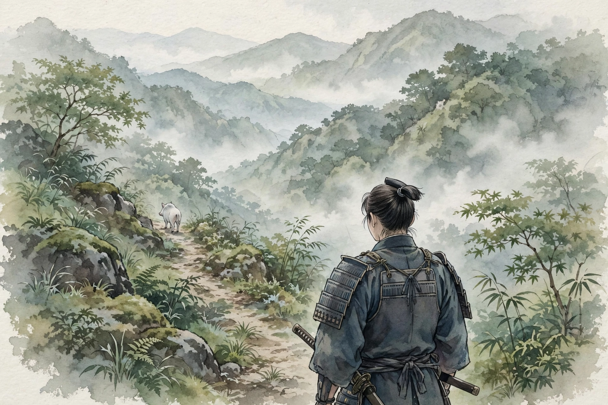

歴史上の人物を、史料で確認できること／伝説／仮説に分けて考察し、その人物像をファイルとして記録する棚。一人につき、一冊の黒いファイルが並ぶ。
背表紙を選ぶと、その人物のファイルが開く。どのファイルも、ヤマトタケル編と同じ見出し構成で、カードをめくって読む。 棚全体の目次・検索 ↓
8冊すべてのページ見出しと中心の問いを並べた目次と、全ページの本文から言葉で探せる検索。見出しや結果を選ぶと、そのファイルのそのページが開く。
「七人の話を同時に聞いた」伝説は、本当か。
業績は『日本書紀』1書に集中し、『古事記』は名のみ。後世に聖人・観音の化身へ聖化され、現代の「超人的な政治家」像は、その盛られた層から作られている。
出典：コトバンク「聖徳太子」 kotobank.jp（2026-11-17 直接確認）
出典：同コトバンク／人数：rekisuta.com（索引確認）
出典：同コトバンク／大山説批評：yamataikokunokai.com、奈良国立博物館展レビュー cinefil.tokyo（いずれも索引確認）
卑弥呼とは、誰か。
史料は中国の『魏志倭人伝』だけ。日本の記紀に名が見えず、所在地も「鬼道」も未決着。現代の「謎の巫女女王」像は、約2,000字の他国史料の上に200年の論争が積み重なった姿である。
出典：コトバンク「卑弥呼」 kotobank.jp（2026-11-17 直接確認）
出典：国立天文台報論文 nao.ac.jp（索引確認。論文本文の精読はしていない）
出典：コトバンク「邪馬台国」 kotobank.jp／「鬼道」諸説の整理 ja.wikipedia.org（いずれも索引確認）
左遷され、祟りをおそれられた道真が、なぜ現代では「受験の神様」になったのか。
同時代の史料が厚く残る実在の政治家。それでも評価は最大級に反転した――屈指の怨霊・火雷天神から、学問の神・受験の神へ。本人の歌と、後世の飛梅伝説が混ぜて語られる点にも注意。
出典：北野天満宮公式由緒の転載 goshuin.net／京都国立博物館解説を引く整理 historylife.net（索引確認）
出典：太宰府市資料 city.dazaifu.lg.jp／yokai.jp（索引確認）
源頼光と四天王、酒呑童子といった伝説を、史料から検証する。
史料の薄さと伝説の厚さの落差が大きい。最古層は「名前が一度出るだけ」なのに、江戸〜明治に形作られた幼少伝説が、日本で最も親しまれる幼児英雄の一つになった。
出典：コトバンク「坂田公時」 kotobank.jp（2026-11-17 直接確認）
出典：同コトバンク／コトバンク「酒呑童子」 kotobank.jp（本文確認済み・2026-11-24）／大東文化大学論文 opac.daito.ac.jp（本文確認済み・2026-11-24）
出典：ja.wikipedia.org「金太郎」（本文確認済み・2026-11-24）
「せをはやみ」の歌は、なぜ恋の歌とされているのか。崇徳院は、いつから鬼・怨霊とされたのか。
同時代像は当代の歌人・編纂者。怨霊像は死後に構築され、『保元物語』で魔王化が決定的になった。最大の受容ギャップは歌にある：配流より前に詠まれた恋の歌が、作者の末路を知る読み手に復讐・祟りの歌へ読み替えられてきた。
出典：コトバンク「崇徳天皇」 kotobank.jp／『今鏡』対比 reki-jin-zatsu.com（索引確認）
出典：白峯神宮公式「由緒」 shiraminejingu.or.jp（2026-11-17 直接確認）／『保元物語』諸本差 konamijin.hatenablog.com（索引確認）
出典：tenki.jp／NDLレファレンス協同データベースを引く整理 st.nfweb.ca（索引確認）
「天皇の皇子が、なぜ何度も危険な戦いに行くのか。」

同じ皇子が、史料ごとに別人格のように違う。『古事記』では兄殺しゆえ父に疎まれた悲劇の子、『日本書紀』では父に信頼された模範的皇子、『常陸国風土記』では即位した天皇。同時代史料は存在せず、単独の実在人物としては確認できない、というのが研究上の扱いである。
出典：コトバンク「日本武尊」 kotobank.jp／記紀比較 rekishinoeki.org／『常陸国風土記』の倭武天皇（三浦佑之） j-cast.com（索引確認）。詳しい照合は、この下の「名前の表」「場面ごとの記述の違い」に続く。
「このファイルは、答えではなく、次に読む人が、確かめるための記録です。」
中身は、カードをめくって読むページにすべて掲載してある。
カードを左右にスワイプ、または ← → キーでもめくれます ／ 目次チップで好きなページへ飛べます
アルカナは、歴史上の人物について調べることから始まった。一般に知られた歴史の考察や人物像を、そのまま受け取るのではなく、もう一度、資料にあたって確かめること。そこから、一人ひとりの人物像を記録していく試みである。
そのときの約束は、一つだけである。史料で確認できること、伝説として伝わること、自分たちの仮説を、混ぜずに分ける。分けたうえで、人物像を一冊のファイルとして残す。分からないことは、分からないまま書く。
本文や記録のうえで、確かめられたこと。
後世の史料や地域に伝わる話。いつの記録かを添える。
自分たちの推測。結論にせず、「保留」として置く。
人物が増えれば、ファイルも増える。この本棚には、そのファイルが並ぶ。背表紙を選ぶと、その人物のファイルだけが開く。
Arcana File No.13 ― 史料・伝説・仮説を分けて記録する、人物像のファイル
「このファイルは、答えではなく、次に読む人が、確かめるための記録です。」
「天皇の皇子が、なぜ何度も危険な戦いに行くのか。」
調査の終わり調査の終わりに、問いのほうが変わっていた。 「自分が知っている英雄像は、どの資料に書かれていて、どの段階で、今の姿になったんだろう」
このファイルでは、情報の種類を記号で分けて書く。確認できたこと、本文に書かれていること、後世の記録、研究者の説、自分たちの仮説を、混ぜないための約束である。記号を選ぶと、その記号の項目だけが目立つ。
ここでは便宜上「ヤマトタケル」と呼ぶ。ただし史料では書き方が異なる。同一人物かどうかは、ここでは断定しない。
| 史料 | 書かれている名前 | 備考 |
|---|---|---|
| 『古事記』 | 小碓命→倭建命 | 亦名は倭男具那命（「具那二字以音」と本文が注す）。熊曾建から名を贈られる場面では「倭建御子」と書かれ、以後「倭建命」と称される。ただし系譜の部分では、物語で名を得る前から「倭建命」の名が先取りして使われる箇所がある（2026-11-20照合）。 |
| 『日本書紀』 | 小碓尊→日本武尊 | 亦名は日本童男（「童男、此云烏具奈」）。熊襲征伐で倒される側が「日本武皇子」の名を奉り、以後「日本武尊」と称される（2026-11-20照合）。 |
| 記紀の景行段にない表記 | 日本武命 | 『古事記』景行段にも『日本書紀』景行紀にも現れない。尾張国風土記逸文・『古語拾遺』等に見える別表記として辞書類に挙がるもので、記紀本文の表記として書くのは誤り（2026-11-20照合）。 |
| 『常陸国風土記』 | 倭武天皇 | 「天皇」と称される書き方に注意する（研究者の見解 ◇ の項も参照）。 |
読み「ヤマトタケル」の根拠（2026-11-20照合）：主本文の「倭建」は一字一音の万葉仮名ではなく訓読による（倭＝やまと、建＝たける）。音仮名で「たける」と綴られた実例は、出雲建の歌の「伊豆毛多祁流（いづもたける）」の「多祁流＝タケル」が傍証になる。ただし「建／武」をタケと読む異説もあり、学術的には未決着として留保する（要確認一覧「タケル／タケの読み」参照）。照合：古典ライブラリー『古事記』中巻・景行段（底本：佐伯常麿校註『古事記』国民図書、1929）／『日本書紀』第56章・第63章・第64章（底本：国史大系）。
同じ人物の物語でも、資料によって語られ方が違う。場面ごとに、どの資料に何が書かれているか――そして何が書かれていないか、確認できていないか――を分けて記録する。
派遣の前提は兄殺しである。天皇が兄・大碓命に「教え諭せ（泥疑＝ねぎ）」と命じたところ、小碓命は明け方に厠に入る兄を捕らえ、手足を引き千切って薦に包み投げ捨てた。本文はこの行き違いの内心を説明しない。父は子の「建く荒き情」を惶（かしこ）んで、西方の熊曾建二人（兄弟、名はない）の討伐を命じる――信頼ではなく畏怖が動機である。このとき小碓命は「其御髮結額也」（額に髪を結う少年）で、年齢の記載はない。叔母・倭比売命の衣と剣を受け、女装して新室の宴に入り、兄建を胸から、逃げる弟建を尻から刺す。瀕死の弟建が「自今以後、應稱倭建御子」と名を献じ、以後「倭建命」と称される。帰途に出雲建を討ち（場面2）、復命するが、父の賞讃・慰労の言葉は一切書かれない。続けてただちに東征を再命され、伊勢で「天皇既に吾を死ねと思ほすか」と嘆き泣く。確認済み（2026-11-20）
骨格は同じだが動機づけと父子関係が正反対である。熊襲征伐は景行27年10月の再叛への対応で、「時年十六」――「16歳」は書紀だけの記述。討つ相手は川上梟帥（取石鹿文）一人で、「川上梟師」は書紀の呼称（古事記にはない）。善射者の弟彦公らを自ら募って同行する。倒される側が「日本武皇子」の名を奉る。28年の復命では天皇が「日本武之功を美（ほ）めて異（めぐ）み愛す」と功を褒め格別に愛したと書かれる。東征は13年後の40年で、尊がまず兄・大碓を推し、大碓が逃げて美濃に封じられた後に自ら志願し、天皇は斧鉞を授け「形則我子、實則神人」「是位則汝位也」と信頼を示す。伊勢では辞別の挨拶のみで、涙の訴えはない。確認済み（2026-11-20）
字の違いにも注意する：古事記は「熊曾」、書紀は「熊襲」。「美濃への派遣」は倭建命の事績としては古事記にない。美濃は兄・大碓命が国造の娘を召しに遣わされた地であり、書紀では大碓が封じられる地である。照合：古典ライブラリー『古事記』中巻「景行天皇と小碓命」「熊曾建と出雲建」「倭建命の東征」（底本：佐伯常麿校註、1929）／『日本書紀』第58章・第63章・第64章（底本：国史大系）。いずれも2026-11-20確認。
出雲建と親しくなる。水浴びをする。先に上がって相手の太刀を佩き、木の偽物を残す。歌が付く。
同じ場面はない。書紀の景行紀には出雲建の挿話も、帰路の出雲立ち寄りもない（2026-11-18に本文レベルで確認）。書紀のヤマトタケルは帰路に吉備と難波の神を退治するが出雲には立ち寄らない。確認済み
限定つきの確認である：「木刀すり替え」のモチーフ自体は書紀にもあり、崇神紀60年7月条で出雲振根が弟・飯入根の本物の太刀を木刀にすり替えて池のほとりで殺し、酷似した歌（「八雲立つ 出雲武が 佩ける太刀 黒葛多巻き さ身なしにあはれ」）を歌う。「出雲建の話は古事記だけ」はヤマトタケル伝承としては正しいが、「木刀すり替えの話は書紀に一切ない」と読むと誤りである。
「戦いを挑み見事に打ち倒した」という要約がある。ただし、その要約には水浴びも、偽物も、歌もない。本文と要約は分けて扱う。
駿河の場面があり、焼津の地名由来と結んで書かれている（表記は「焼津」。古事記は相武国で「焼遣」とする点が違う）。
相武国（相模）での出来事として書かれている。国造が、大沼に荒ぶる神がいると偽ってタケルを野に誘い出し火を放つ。タケルは倭比売（ヤマトヒメ）の袋（火鑽）を開け、剣で草を薙いで迎え火を放ち、国造らを討ち滅ぼす。火が付けられた地は本文（写本系）では「焼遣」と表記され「ヤキヅ」と読む（現代の焼津に相当）。ただし表記は伝本・版によって「焼津」に作るものもあり、一文字に固定できない（2026-11-18確認）。確認済み
書紀は舞台を駿河に置くのに対し、古事記は相武国に置く。古事記の相武配置は編纂過程での移転の疑いが『焼津市史』で指摘されている。直後の弟橘比売の歌「さねさし 相武の小野に 燃ゆる火の 火中に立ちて 問ひし君はも」も、古事記内部では相模の話であることを裏づける。
大蛇（八俣遠呂智）の尾を切ると十拳劒の刃が毀（か）け、中から出た剣はまず「都牟刈之大刀（つむがりのたち）」と呼ばれ、確定した名は音表記の「草那藝之大刀（くさなぎのたち）」（「那藝二字以音」）である。須佐之男命は異物と思い、天照大御神に献上した。「天叢雲」という名は古事記に一切出てこない。東征では倭比売命がこの草那藝剣と御嚢（火打石）を授け、相武国（相模）の火難では命自身が御刀で草を刈り払い、火打石で向かい火をつけて逃れる。命名・改名の説明は本文にない――剣は授与の時点で既に草那藝であり、名は火難より先に存在する。確認済み（2026-11-20）
本文でも大蛇の場面で最初から「此所謂草薙劔也」とし、素戔鳴尊は「天神」に上獻する（天照と名指ししない）。「本名は天叢雲劔、日本武皇子（日本武尊）の時に改名して草薙劔」という二段の命名史は、神代紀の一書（異伝）にだけある。火難の地は駿河国（焼津の地名起源に結ぶ）で、本文は火打石の迎え火のみを記し、草を薙ぐ話はない。命名理由――「王の佩いた剣・藂雲が自ら抜けて傍らの草を薙いだので草薙と号した」――は景行紀の一云（異伝）にだけ載る。つまり通説の「天叢雲→草薙への改名」は、記紀の本文ではなく書紀の異伝層の産物である。確認済み（2026-11-20）
書紀に熱田と剣を結ぶ記事は3つあるが、書かれているのは「所在」と「事件」までである。(1)景行紀51年条の挿入的な注記「初日本武尊所佩草薙橫刀。是今在尾張國年魚市郡熱田社也」――いつ・誰が・どのように祀ったかを物語る記事ではなく、編纂時点での剣の所在を示す注記である（訓読底本は、この文が本来別の位置にあったものの錯簡ではないかと注する）。(2)天智紀7年（668年）是歳条「沙門道行盜草薙劒。逃向新羅。而中路風雨。芒迷而歸」――沙門（僧）の道行が剣を盗んで新羅へ逃げようとし、途中の風雨で迷って帰った、とだけある。剣をどこから盗んだか、道行の出身・国籍、処分、剣の帰着先は一切書かれていない。「新羅の僧・道行」は後世の拡大解釈である。(3)朱鳥元年（686年）6月戊寅条「卜天皇病。祟草薙劒。即日。送置于尾張國熱田社」――天武天皇の病を占うと草薙剣の祟りとされ、即日、熱田社に「送り置」かれた（「還し置く」とは書かれない）。書紀は668年と686年の記事を明示的には結び付けておらず、「盗難後に剣が宮中に留め置かれ、686年に返された」という一続きの物語は本文ではなく、後世の解釈・縁起の層である（所在をめぐる諸説は「研究者の見解 ◇」見解11）。
『古事記』は熱田の祭祀を書かない。剣が尾張の美夜受比売（書紀では宮簀媛）のもとに置かれたところまでを語り、熱田の地名も、社を立てる・祀るという記述もない（668年・686年の事件も、古事記は推古天皇の代で終わるため当然ながら載らない）。傍証として『古語拾遺』（807年）は、剣が日本武尊の凱旋の年から尾張熱田社に留められ、外賊が盗んで逃げたが境を出ることができなかった、という理解を伝え、9世紀初頭には「剣は熱田にあり、盗難は失敗した」という認識が成立していたことを示す（ただし斎部氏の立場から書かれた文献である点は割り引く）。
創祀譚は風土記逸文以降の伝承の層である。熱田での祭祀を明言する最古の「物語」は、『釈日本紀』巻七所引の『尾張国風土記』逸文である――日本武命が宮酢姫の家に泊まり、厠へ行く際に随身の剣を桑の木に掛けて忘れ、取りに戻ると剣は神のように光って手に取ることができず、「此剣神気。宜奉斎之、為吾形影（わが形影として奉斎せよ）」と言って社を立てた、とする。ここで剣は日本武尊自身の「形影」とされ、現在の公式説明（天照大神の御霊代）とは神格の理解が異なる。内容は奈良時代の伝承に遡る可能性があるが、伝達経路は13〜14世紀の注釈書の引用であり、「8世紀の本文そのもの」を直接読んでいるのではない。『尾張国熱田太神宮縁起』は、氷上邑での宮酢媛との出会い、「床の守り」としての託剣、楓の木の自燃による「熱田」の命名と社地の選定までを物語るが、社祠がいつ創建され、剣がいつ遷座されたかは明記していない（尾崎久彌の指摘）。桑の木の光る剣も、縁起では風土記逸文と違い、尊は剣を手に取ることができた上で媛に託したとされ、伝承の揺れが見える。道行を「新羅僧」とし、剣が独りでに抜けて熱田へ還った・再び盗んで難波に漂着した・自首して死罪に処せられた、といった説話的細部を加えるのもこの層である。縁起の成立は、奥書では貞観16年（874年）編纂・寛平2年（890年）筆削を称するが、実成立は平安中期〜鎌倉時代初頭とする説が有力視され、寛平成立を可とする説もあり未決着である。また広く言われる「創祀・景行天皇43年（113年）」は、中世の『熱田大神宮御鎮座次第本紀』などに基づく後世の編年で、記紀や縁起に直接基づくものではない。制度面では『延喜式』に「熱田神社一座」とあり名神大社に列し、祭神が「一座」とされることから、古代には神剣のみを祀っていた可能性が高いとされる。
現在の公式説明（二次資料経由）：熱田神宮は主祭神・熱田大神を「三種の神器のひとつである草薙神剣を御霊代（みたましろ）としてよらせる天照大神」と説明し、剣は御神体として「草薙神剣（くさなぎのみつるぎ）」と称される。相殿神は天照大神・素盞嗚尊・日本武尊・宮簀媛命・建稲種命の五神で、いずれも草薙剣に縁の深い神々とされる。ただし2026-11-20時点で公式サイトはシステムメンテナンスのため一時停止中で、由緒・御祭神ページの原文を直接確認できておらず、この点は要確認のまま残す。剣そのものは御神体として非公開で、実在・材質は確かめようがない。確認済み（2026-11-20）
照合：古典ライブラリー『古事記』上巻「八俣の大蛇」 kotenlibrary.jp／中巻「倭建命の東征」 kotenlibrary.jp／ウィーン大学 Kamigraphie（記紀本文対照） religion-in-japan.univie.ac.at／原文引用の整理 mikadokai.com／祭祀の照合：古典ライブラリー『日本書紀』第68章（景行51年条） kotenlibrary.jp・第330章（天智7年・道行の盗難） kotenlibrary.jp・第406章（朱鳥元年・草薙剣の祟り） kotenlibrary.jp／『尾張国風土記』逸文 ja.wikipedia.org／『尾張国熱田太神宮縁起』 ja.wikipedia.org／熱田神宮（公式文言の引用・延喜式「一座」ほか） ja.wikipedia.org／熱田神宮公式サイト atsutajingu.or.jp（トップページで一時停止の告知のみ確認）（いずれも2026-11-20確認）。なお「都牟刈／都牟羽」は底本により表記が異なる点、熱田神宮公式サイトの由緒・御祭神ページは当日メンテナンス停止中で原文を直接確認できなかった点は、要確認として残す（要確認一覧「草薙剣の由来」「草薙剣の祭祀」参照）。
走水（はしりみづ）の海で「その渡の神」が浪を興し、船が進めなくなった時、后・弟橘比売命が自ら「妾（あれ）、御子に易（かは）りて海の中に入らむ。御子は遣はさえし政（まつりごと）遂げて、覆奏（かへりごとまを）したまふべし」と申し出る。尊が海を侮る発言をした前段はなく、「海神の怒り」という説明も本文にない。入水は、菅畳八重・皮畳八重・絁畳八重を波の上に敷き、その上に下り坐すという儀礼的な所作で、波はおのずから凪いだ。彼女の歌が1首ある――「さねさし 相摸（さがむ）の小野に 燃ゆる火の 火中（ほなか）に立ちて 問ひし君はも」（直前の相模の野火で、火中に立って案じてくれた君への歌。本文の並びでは、波が凪いで船が進んだ後に「ここにその后歌曰」と掲げられる）。七日の後、その御櫛が海辺に漂着し、櫛を取って御陵を作り治め置いた。ただし櫛の漂着地も御陵の地も地名は書かれていない。走水の段に出自・父・氏族の記述は一切ない（導入は「その后、名は弟橘比売命」のみ）。帰路、足柄の坂本で坂の神（白鹿）を退治した後、尊は三たび「阿豆麻波夜（あづまはや）」と歎き、その国を「阿豆麻」と呼ぶ（歌ではなく歎きの言葉）。確認済み（2026-11-20）
景行40年の東征の枠の中の記事。古事記にない要素が3つある。(1)出発前に尊が海を望んで「是小海耳。可立跳渡（これは小さい海だ、立ち跳びにも渡れよう）」と高言する。(2)彼女の出自がこの場面の中で「穗積氏忍山宿禰之女也」と明記される。(3)彼女自身が「是必海神心也（これは必ず海神の心である）」と原因を言い、「妾の身を以て王の命を贖ひて海に入らむ」と「贖い」の言葉で申し出る。入水は即断で、言い終わると「乃ち瀾（なみ）を披（おしわ）けて入りにき」――畳も坐す所作もない。彼女の位置付けはこの場面では「從王之妾」で、名は「弟橘媛」（「命」は付かない）。歌はない。櫛・七日・御陵の記事もない。代わりに、海の名の命名譚がある――「故（かれ）時人、其の海を號（なづ）けて馳水と曰ふ」（古事記は「走水」を既存の地名として使い、由来は述べない）。帰路の歎きは碓日嶺で、東南を望んで三たび「吾嬬者耶（あがつまはや）」と歎き、山の東の諸国を「吾嬬国」と呼ぶ（古事記＝足柄・その国を阿豆麻、とは場所も範囲も違い、酒折の歌との前後も逆である）。確認済み（2026-11-20）
千葉県茂原市の橘樹神社を「櫛を納めた御陵」とする話は、古事記が御陵の場所を書いていない以上、記紀本文ではなく、古事記の記事を特定地に結び付けた社伝の層である（本殿背後の古墳を御陵とすること、創建「（伝）景行天皇40年」もこの層）。ただし神社自体の古さは別途史料で追える：国史での初見は『日本三代実録』元慶元年（877年）・元慶8年（884年）の「橘樹神／橘神」への神階授与で、『延喜式』神名帳に上総国長柄郡「橘神社」と載る式内社である。つまり9世紀後半には「橘」の神を祀る社がこの地域にあったことは言えるが、それが弟橘媛の御陵であることまではこれらの史料は言っていない。横須賀市・走水神社の由緒、木更津の「君さらず（君不去）」の悲恋伝説、袖ケ浦などの「袖・衣冠が流れ着いた」地名伝説も、いずれも後世の層で記紀本文にはない（古事記が書く遺品は櫛のみ）。
涙、微笑み、「本当は怖い」――これらは本文にない。あとから足された想像は、赤い ◆ として、本文とは分けて置く。なお訂正が1つある：「さ寝むな」と引かれがちな歌（「……真寝（まね）むとは吾は思へど……」）は、弟橘比売への嘆きの歌ではない。帰還後に尾張で美夜受比売と再会した場面の歌で、相手は美夜受比売であり、内容も嘆きではない。「さねさし」は弟橘比売の歌の冒頭の枕詞であって、倭建命の言葉でもない。この2点は混同されやすいので分けて記録する。確認済み（2026-11-20）
照合：古典ライブラリー『古事記』中巻「倭建命の東征」 kotenlibrary.jp（底本：佐伯常麿校註『古事記』国民図書、1929、182–188頁）／『古事記』弟橘比売命 原文対訳（武田祐吉訓） classicstudies.jimdofree.com／『日本書紀』第65章「焼津の野火と弟橘媛」 kotenlibrary.jp・第66章「新治筑波の歌と吾嬬国」 kotenlibrary.jp（底本：国史大系）／橘樹神社（茂原市） ja.wikipedia.org（神社由緒書等に基づく二次まとめ。いずれも2026-11-20確認）。なお、書紀・景行51年条の系譜（妃・稚武彦王）の原文は2026-11-20の系譜照合で確認し解消した（要確認一覧「系譜の記事」参照）。古事記全巻の系譜部での出自の扱い（系譜でも父は記されないことは同照合で確認）、橘樹神社の公式由緒の原文など、残る細部は要確認として分けて残す（要確認一覧「弟橘比売命の場面」参照）。
草那芸剣を美夜受比売のもとに置き、「この山の神は、徒手（むなで）に直（ただ）に取らむ」と言って伊服岐能山に登ったとき、山の辺に白猪（しろゐ）が現れる。その大きさは「牛の如し」と明記される（道を塞ぐとは書かれない）。倭建命は言挙（ことあげ）して「この白猪に化（な）れるは、その神の使者（つかひ）ぞ。今殺さずとも、還らむ時に殺さむ」と言って登る。すると神は大氷雨（おおひさめ）を降らして命を「打ち惑はし」た。本文中の細注に「この白猪に化れるは、その神の使者にあらずて、その神の正身（むざね）に当たれり。言挙によりて惑はさえしなり」とある――「使いではなく本体」という説明は、地の文ではなく細注という位置づけである点は区別すべきだが、後世の注釈ではなく『古事記』本文の伝承自体に含まれる注記である。下山して玉倉部の清泉に至って休息し、御心がやや寤（さ）めたので、その泉を居寤清泉（いさめのしみづ）と名づける（泉の水を「飲んだ」とは書かれない）。その後、当芸野（足がたぎたぎしくなる）・杖衝坂・尾津の一松・三重村と衰えを地名に残しながら進み、能煩野（のぼの）（「煩」の字）で思国歌3首と、剣を思う最後の歌を詠んで崩じる。年齢の記載はない。大氷雨の訳語は訳者により揺れ（「大粒の雹」とする訳、「霰・雹」とする解説がある）、原文表記で引用すべきである。確認済み（2026-11-20）
尾張に還って宮簀媛を娶り一月余り留まったところ、「近江の胆吹山（五十葺山とも表記）に荒神あり」と聞いて出かける。剣を解いて宮簀媛の家に置き、徒（かち）で登ると、山神が大蛇に化けて道に当たって（道を塞いで）現れる（大きさの比喩はない）。日本武尊は「この大蛇は必ず荒神の使いだろう。既に主神を殺すことを得たら、その使者は豈（あに）求めるに足らむや（相手にするまでもない）」と言って、蛇を跨いでなお進む（古事記に跨ぐ動作はない）。実はそれは主神の化けた姿であり、この「本体だった」という説明は古事記のような細注ではなく、地の文に「日本武尊、主神の蛇に化れるを知らずして」と語り手が明示する構成である。山神が雲を興し氷を零らし、峯は霧に谷は曀（くら）く、行くべき路がなくなり、尊はさまよい、霧を凌いで僅かに出るも「失意（こころまど）ひて酔へるが如し」。山下の泉の側に居て、その水を飲んで醒める――泉の名は居醒泉（いさめのいづみ）（「醒」の字）。ここで「日本武尊、是に始めて痛身（みなや）みたまふこと有り」と病の始まりが明記される（古事記にこの一句に相当する明示はない）。やや起きて尾張に還るが宮簀媛の家には入らず伊勢へ移り、能褒野（「褒」の字）に至って痛み甚だしく、俘えた蝦夷らを神宮に献じ、吉備武彦を遣わして天皇への復命の言葉を奏上させて崩じる。「時に年三十」と年齢が記される。能褒野での思国歌はない。確認済み（2026-11-20）
「猪は神の使いで、本体は蛇」という説明は、記紀どちらの本文にもない。古事記は「猪＝正身（本体）」と細注で断定し蛇は一切登場せず、日本書紀は「蛇＝主神の化けた姿」と地の文で断定し猪は一切登場しない。したがってこの説明は、記（猪）と紀（蛇）を後から一つの話に合成したときに生じる混同・語り直しとみるべきであり、記紀本文の記述として引用してはならない。同様に「毒気に当たった」という語も、今回照合した両本文の当該箇所には出てこない（記は氷雨による「打惑」、紀は雲・氷・霧による「失意如酔」・「痛身」が本文の表現）。猪と蛇の書の対応を逆に記した二次文献も実在する（神戸大学の論文PDFが吉野裕子説の紹介箇所で「蛇（古事記）と猪（日本書紀）」と取り違えている）ため、二次資料を使う際も本文照合が優先する。確認済み（2026-11-20）
照合：古事記の原文『伊吹山の神』 kojiki.co・『白鳥の伝説』 kojiki.co／古典ライブラリー『古事記』「中巻 倭建命の最期と白鳥」 kotenlibrary.jp（底本：佐伯常麿校註『古事記』国民図書、1929、188〜193頁）／古典ライブラリー『日本書紀』「第67章 胆吹山の荒神と日本武尊の最期」 kotenlibrary.jp（底本：国史大系『日本書紀』、1897、147〜150頁）／國學院大學デジタルミュージアム「伊夫伎神社」 d-museum.kokugakuin.ac.jp（書紀・景行天皇40年条の引用）／ヤマトコトバ学会「ヤマトタケルの伊吹山の難」 yamatokotoba-gakkai.org（細注の位置づけ。いずれも2026-11-20確認）。なお、山名などの漢字表記は底本・校訂により異なる箇所があり、厳密な引用では校注本を指定して再照合すること（要確認一覧「伊吹山 ― 白猪と大蛇」参照）。
能煩野（「煩」の字）に至って、倭建命は国を思って歌う――「倭は国のまほろば たたなづく青垣山隠れる 倭しうるはし」、「命の全けむ人は 畳薦平群の山の熊白梼が葉を 髻華に挿せその子」（この後に本文は「此歌者、思国歌也」と置く。ただし「此歌」が直前の1首だけを指すのか歌群を指すのかは解釈が分かれ、思国歌の範囲は断定しない）、片歌「はしけやし 吾家の方よ 雲居起ち来も」、そして辞世に美夜受比売のもとに置いてきた剣を思う「嬢子の床の辺に 吾が置きし つるぎの大刀 その大刀はや」。原文は「歌竟、即崩」――歌い終えるとすぐに崩じ、駅使（早馬の使）が都へ知らせる。享年も年次も書かれない。大和にいた后たちと御子たちがみな下ってきて御陵を作り、陵のまわりの那豆岐田（なづきだ）を匍匐（這い回って）泣きながら歌う。命は八尋白智鳥（やひろしろちどり）と化して天に翔け、浜へ向けて飛ぶ（「八尋」は大きなことの形容で、実在の小鳥シロチドリではない。原文は変身の主語を「魂」とは明記しない）。后と御子は、小竹の刈杙（切り株）で足が切り破れても痛さを忘れて泣きながら追う。陵辺の1首＋追跡の3首＝四歌について、本文は「是四歌者、皆歌其御葬也。故、至今其歌者、歌天皇之大御葬也」と、今も天皇の大御葬に歌われる起源として締める。白鳥はその国（伊勢）から飛び、河内国志畿（しき）ただ一か所に留まる。そこに御陵を作って鎮まっていただき、この御陵だけを「白鳥御陵」と呼ぶ。しかし鳥はそこからまた天へ翔けて飛び去る。大和の琴弾原は出てこない。大和に留まったとも書かれない。棺を開ける場面、遺体がないこと、衣冠を葬ること、父天皇の嘆きも、いずれも古事記にはない。確認済み（2026-11-20）
能褒野（「褒」の字）に至って痛みが甚だしくなり、俘えた蝦夷を神宮に献じ、吉備武彦を遣わして天皇へ長文の散文の奏言を伝える（「身の亡ぶを惜しむのではない、ただ面（まみ）えられないことだけを愁える」）。「既而崩于能褒野、時年三十」――享年30歳が明記され、死の年は景行天皇踐祚43年と編年される。この場面に本人の歌はない。能褒野の思国歌もない。父・景行天皇は「寢不安席、食不甘味、晝夜喉咽、泣悲摽擗」と嘆き、群卿に詔し百寮に命じて伊勢国能褒野陵に葬らせる（陵を作る主体は后・子ではなく朝廷である）。日本武尊は白鳥（書紀はこの字をそのまま使い、「八尋」の形容はない）と化して陵から出て倭国（大和）を指して飛ぶ。群臣が棺櫬（棺）を開いて見ると、明衣（装束）だけが空しく残り、屍骨がない。使者を遣わして白鳥を追い尋ねると（追うのは后・子ではない）、鳥は倭の琴彈原（琴弾原）に停まるのでその地に陵を造り、さらに河内へ飛んで舊市邑（旧市邑、ふるいち）に留まるのでそこにも陵を作る。「時人、是の三陵を號けて白鳥陵と曰ふ」――能褒野陵・琴弾原の陵・旧市邑の陵の三陵あわせての総称である。鳥はついに高く天へ翔け上り、徒（いたずら）に衣冠を葬ることになり、功名を録すため武部を定めた、と制度の起源で締める。追跡・葬送の歌はない。なお「倭は国のまほろば」の歌群は、書紀では景行17年に景行天皇自身が日向・子湯県で詠んだ「思邦歌」として置かれ（歌の順序も古事記と異なる）、景行53年には父が愛子を顧う東国行幸の記事が続く。書紀の追慕は、后・子の葬送歌ではなく父の嘆きの言葉と行幸で語られる。確認済み（2026-11-20）
(1)「琴弾原を経て古市へ」は書紀だけの経路である。古事記に琴弾原はなく、大和への立寄りも書かれない。自治体や神社の案内で「記紀によると…琴弾原を経て」と一括りにされることがあるが、本文レベルでは書紀の伝承である。(2)「后や子が追いかけて歌った」は古事記だけで、書紀で追うのは朝廷の使者であり歌はない。(3)「棺を開けると衣冠だけ」「三陵すべて白鳥陵」は書紀だけで、古事記で「白鳥」の名が付くのは河内志畿の陵だけであり、能煩野の陵は白鳥陵とは呼ばれない。(4)「倭は国のまほろばを死に際に歌った」は古事記だけで、書紀では景行天皇の「思邦歌」である。(5)現在の三陵（亀山市の能褒野墓、御所市の琴弾原白鳥陵、羽曳野市の古市白鳥陵）は治定の結果であって、本文の直接の証拠ではない（詳しくは「ゆかりの地と画像」）。確認済み（2026-11-20）
照合：古典ライブラリー『古事記』「中巻 倭建命の最期と白鳥」 kotenlibrary.jp（底本：佐伯常麿校註『古事記』国民図書、1929、188〜193頁）／古事記の原文『白鳥の伝説』 kojiki.co／新編日本書紀 卷第七・景行天皇紀（転載テキスト） miko.org（いずれも2026-11-20確認）。なお、思国歌の範囲（「此歌」が1首か歌群か）、本文テキストの校訂差など、残る細部は要確認として分けて残す（要確認一覧「白鳥の語られ方」参照）。
東征の帰路、荒ぶる蝦夷や山河の荒ぶる神を平らげて還る途中、足柄の坂本（坂のふもと）で食事をしていたところ、その坂の神が白き鹿に化けて来て立った。倭建命は、食べ残した蒜（ひる）の片端で待ち打つと目に中（あた）り、打ち殺した。そこで坂に登り立ち、三たび歎いて「阿豆麻波夜（あづまはや）」と言い、故にその国を「阿豆麻」と名づけた（漢文原文「其坂神、化白鹿而来立。爾、即以其咋遺之蒜片端待打者、中其目、乃打殺也。故、登立其坂、三歎詔云、阿豆麻波夜。故、号其国謂阿豆麻也」）。本文が書くのは「足柄の坂」であって「峠」ではなく、現在の足柄峠（相模・駿河の境）への比定は注釈の層である。白鹿は殺される存在で、道案内などの導きの要素は本文にない。また、「あづまはや」が誰を・何を歎く言葉なのかは、本文に明記がない。直前に弟橘比売命の入水があるため妻を偲ぶ言葉と読む解釈が広く採られるが、鹿の目に中（あ）てたことによる「中目（アツマ）」の語呂とする説とは相容れず、議論は解決に至っていない。この直後には甲斐・酒折宮の問答歌が続き、科野（信濃）については坂の神を説き伏せたとあるだけで鹿の話はない――古事記では、白鹿・蒜・三歎・国名の四要素が足柄の一場面に圧縮されている。確認済み（2026-11-20）
対応する東征・帰還記事に、足柄は現れない。話は二つに分かれて、場所も移されている。(1)歎きは碓日嶺（碓氷峠）である。酒折宮の問答歌の後、武蔵・上野を経て碓日坂に至り、「時に日本武尊、毎に弟橘媛を顧（しの）びたまふ情有します。故れ、碓日嶺に登りて東南のかたを望りて、三たび歎きて曰く、『吾嬬はや』」――書紀は場所だけでなく、動機が弟橘媛を偲ぶ情であること、「嬬」は「ツマ（妻）」と読むという注、名づけの対象が山の東の諸国＝吾嬬国であることまで明記する。古事記で曖昧だった点が、書紀では説明として補われている形であり、酒折の歌と歎きの順序も古事記と逆である。(2)白鹿と蒜は、その後の信濃の話である。山中で食事をしていると、山の神が白き鹿に化って王の前に立ち、王が一箇の蒜で弾きかけると眼に中って殺してしまう。すると道を失うが、白き狗（犬）が来て導く様子があり、それに従って美濃へ出ることができた。以後、この山を踰える者は蒜を嚼んで人および牛馬に塗れば神の気に中らない、という習俗の由来譚で締められる。確認済み（2026-11-20）
南足柄市苅野の足柄神社（別名・足柄明神）の縁起（神奈川県神社庁掲載）は、冒頭で「伝説としては」と断った上で、白鹿を正反対に語る。日本武尊が東征の折、明神嶽から足柄山を越えようとしたが樹木が生い繁って進路に迷った。そこへ白鹿が眼前に現れ、その後に従うと足柄峠へ難なく進むことができ、峠で白鹿は消えた。これは神霊の御導きであるとして、侍僕を同所に3年間滞在させて神霊を齋祀されたと云う――白鹿は殺されず、導く存在である。この縁起を通読しても、「あづまはや」「吾妻」に結びつける記述は出てこない（縁起が地名に触れるのは、相模湾を望んで「逆波」と呼称されたという別系統の話である）。祭神は日本武尊・瓊瓊杵尊・天照皇大御神の三柱（ただし縁起本文中の祭神への言及は、瓊々許尊・日本武尊の二方にとどまる）。創立は天慶3年（940）に明神嶽へ奉斎されたことに求められ、鎌倉時代末期に矢倉嶽より現鎮座地（苅野）へ遷座されたと言われる。社号は、江戸時代の古文書では「苅野岩村大明神」、明治維新後に「矢倉神社」、昭和14年以降「足柄神社」と改称。明治6年（1873）に郷社、明治40年（1907）に神饌幣帛料供進の神社に指定された。なお、足柄峠の足柄明神社については、南足柄市の広報資料（2023年）が、白鹿を「坂東を守ろうとヤマトタケルに果敢に挑んだ」存在として紹介し、足柄明神は明治6（1873）年に本宮の地である足柄峠へ戻られたとする。同じ「白鹿」でも、殺される（記）／導く（苅野の社伝）／挑む（峠の明神の語り）と、語りは三通りある。確認済み（2026-11-20）
(1)足柄神社を、『古事記』の足柄の坂の場面の「証拠」や「故地の社」として直接つなげてはならない。記紀本文に足柄の社の創建記事はなく、社の縁起は記の改変であって、記の裏付けではない。つなげられるのは「後世の社伝が古事記の説話を取り込み、改変して語り直した」という受容の層においてのみである。(2)書紀を根拠に「足柄であづまはやと言った」とも書けない（書紀の歎きは碓日嶺）。(3)「導く白鹿」は、祭神として迎えた日本武尊が社の神（明神）を殺したという不都合を避ける形で成立したと読むのが自然だが、その成立過程そのものは今回の資料では実証できていないため、語りの対比として提示するにとどめる。(4)天慶3年創建の主張自体も社伝の層であり、同時代史料で裏付けたわけではない。確認済み（2026-11-20）
照合：古典ライブラリー『古事記』中巻「倭建命の東征」 kotenlibrary.jp（底本：佐伯常麿校註『古事記』国民図書、昭和4年、182〜188頁）／ヤマトコトバ学会「ヤマトタケルの『あづまはや』について」 yamatokotoba-gakkai.org／古典ライブラリー『日本書紀』第65章 kotenlibrary.jp・第66章「新治筑波の歌と吾嬬国」 kotenlibrary.jp（底本：国史大系）／神奈川県神社庁「足柄神社」 kanagawa-jinja.or.jp／南足柄市「金太郎通信：足柄明神社の鳥居が再建されます」（令和5年10月13日） city.minamiashigara.kanagawa.jp（PDF）（いずれも2026-11-20確認）。なお、日本武尊の祭神化の時期・経緯、1873年の峠の明神をめぐる説明の食い違い、両社の現在の関係など、残る細部は要確認として分けて残す（要確認一覧「能褒野墓・足柄神社」参照）。
調査の最後に、ファイルの最終ページへ残した項目。ここに書けるのは、資料のうえで確かめられたことだけである。
先人の説や辞典の説明は ◇ として引く。どれか一つを「答え」として採用はしない。
『常陸国風土記』のヤマトタケルは、記紀の英雄像とは異なる人物像――治水や国状視察を行う為政者であり、一貫して「天皇」と称される――として読める。風土記の伝承を原型とみる仮説を提示している。
※ 2026-11-20の書誌調査で、この論旨と一致する論文「『常陸国風土記』とヤマトタケル天皇――伝承の相違が語るもの」（『日本語文学』第82輯、2018年、493–514頁、DOI: 10.21792/trijpn.2018..82.024）の要旨は確認できたが、著者名はKCI・教保文庫の書誌ページのいずれにも表示されず未確認である。したがって「洪成穆」の名への帰属は未確認のまま置き、引用時は題名・誌名・年・頁・DOIで特定すること。要約の範囲については要確認一覧「論文の要約の範囲」「風土記と論文」を参照。
ヤマトタケルを、多くの話がまとまった、東西平定の物語とする説明。
※ 2026-11-20の書誌調査で、吉井の主著『ヤマトタケル』（学生社、1977年9月、276頁、副題「古代における人間の誕生」、NCID BN01465876）の書誌が確定した。同書の説の骨子は、伝承のそれぞれがヤマトタケルの別名（小碓／倭男具那／倭建など）と結びつき、名に関連して述べられた伝承が1人の英雄像として統合される形で記紀のヤマトタケルが生まれた、とする統合説である（二次紹介による要約レベル。景行とヤマトタケルの親子関係への否定的見解も紹介される）。成立をめぐる学説の系譜の中では見解12に置いた。
成務天皇の実在性について疑う見方がある。また、ヤマトタケルは大和朝廷の勢力拡大を象徴する伝説上の英雄であり、記紀の所伝はすべて史実とは認められない、とする説明がある。
『古事記』景行段の「若帯日子命と倭建命、亦五百木之入日子命、此の三王、太子の名を負ふ」を、皇位を継ぐ資格を持つ皇子として特記したものと読む。
※ 該当箇所の本文そのものは、2026-11-20の景行段照合で『古事記』系譜部分にあることを確認した（古典ライブラリー、佐伯常麿校註本）。読み方（解釈）は一つの見解として置く。
仲哀天皇までの系譜に、史実としての資料的価値を認めなかったとされる。記紀を史料批判し、神武から仲哀までの存在・事績を後世の造作とした立場で、日本武尊の熊襲征伐・東国経略の否定は1940年の発禁・起訴理由にも明記された。
※ 書誌（1913年刊、1919年刊→1924年補訂、岩波書店）は2026-11-20の調査で確定した。ただし二次要約で引かれる「実際には4世紀から6、7世紀頃の複数の大和の英雄を具現化した架空の人物」という年代幅については、原著の該当頁は未確認である。一つの見解としてのみ置く。
「薙ぐ」以外の語源説がある。(1)「蛇の剣」説：クサは「臭」、ナギは「蛇」の意で、原義は大蛇の尾から出た剣に合うとする。(2)高崎正秀はクサ＝串＝奇で「霊威ある」意、ナギ＝ナダ＝「蛇」として、名義を「霊妙なる蛇の剣」と説き、名がクシナダヒメ（奇稲田姫）に通じることにも触れた。英語圏でも Nelly Naumann「The Kusanagi Sword」（1992）などが蛇と結ぶ語源論として引かれる。いずれも定説として確定したものではなく、百科事典自身も「諸説あるが、実際はあまり判っていない」と断っている。
※ Naumann らの原論文本文は2026-11-20の調査で未入手（書誌と二手・三手の要約のみ確認）。英語圏の要約と高崎説は内容が同一ではないため、混同しないこと。
熱田の剣は御神体として非公開で科学的調査はなく、形や材質について確かめられた記録は存在しない――検証不能が学術的前提である。江戸期の盗み見伝承『玉籤集』裏書（長さ2尺7〜8寸、全体に白く錆びがない等。伝聞史料）を根拠に、後藤守一は剣を銅剣（白銅剣）と見て博多・三雲南小路出土の弥生銅剣を具体例に挙げた。これに対し吉田広（2024）は、弥生の銅剣は短い茎で柄に挿す刺突専用で「草を薙ぐ」使い方はおよそ無理であり、「弥生の銅剣が伝世され三種の神器の地位に上り詰めたとの考えを積極的にとることはできまい」と再検討した。大蛇の描写を斐伊川上流のたたら製鉄と結ぶ読みもあるが、物語解釈であって熱田の剣が鉄剣である証拠ではない。
宮簀媛（美夜受比売）は記紀ともヤマトタケルの系譜（后妃・子の系譜）に記されず、物語にのみ現れる。吉井巌の説では、王権の象徴であるはずの草薙剣が尾張氏の熱田社にあるのは本来おかしく、元は尾張氏に伝わる神剣が王権の天叢雲剣と同一視される事情が生じたため、「斎宮（倭姫命）から授与され、タケルが宮簀媛のもとに剣を残して死ぬ」という構想が考案された。福岡猛志は宮簀媛を「草薙剣がなぜ熱田社にあるのかを物語る話としてのみ存在する」とし、新井喜久夫も剣を熱田に置く理由を作る巫女的人物として創出されたとする方向で論じる。あわせて、「三種の神器」という枠組み自体も記紀の本文レベルでは固定していない（古事記に語なし、書紀は第一の一書のみ、『古語拾遺』は鏡・剣の「二種の神宝」）点に注意する。
※ 2026-11-20の調査では個人研究サイトの引用紹介経由で確認した。ファイルの確定記述に使う際は『ヤマトタケル』（1977）等の原典で文面を確認すること。
(1)蛇神・水神・農耕神説：書紀で蛇とされる理由について「蛇は水の神、猪は田の神と結びつけられるため、どちらも農耕神の性格を持つから」との主張があると國學院DBは紹介するが、DBはこの主張の主張者名を記していない（要確認）。(2)吉野裕子『山の神―易・五行と日本の原始蛇信仰』（講談社学術文庫）：講談社の紹介文によれば、本来の山の神＝蛇（原始蛇信仰、祖霊としての蛇神）が古く、6〜7世紀に将来された易・五行の新たな神々と混淆し、猪は易・五行で山の神が陰の極として亥（猪）となる新しい相として付いた、という歴史的層位づけがなされる。記＝猪／紀＝蛇の違いを信仰史で説明しようとする代表的な枠組みの一つである。(3)その他の諸説（DBの集約。個別の主張者名はDB本文で明示されないものが多い）：動物の姿で現れる神を地祇的・在地の土俗的な神とする説、白い動物は神に近い性質を持つため荒振神ではなく神聖な神とする説（小野諒巳の論題「荒ぶらぬ白き神」もこの方向）、熊野の大熊・足柄の白鹿・伊服岐の猪は地名と動物の音通の語呂合わせとする説、王化に服従しない賊徒を表したとする説、強風の山に息を吹く巨人神を見立てたとする説、気候激変と交通妨害から悪神を想定したとする説、高山に鎮座する国魂の神を帰服させようとしたとする説。伊吹山と息長氏との関係を指摘する論も複数あるとDBは記す（具体的内容は未確認）。代表的文献としてDBは守屋俊彦「伊吹山の神―倭建命の登攀―」（1987／『ヤマトタケル伝承序説』1988）、寺川真知夫「伊服岐能山の神と倭建命」（2012）、小野諒巳「倭建命と伊服岐山の神」（2010）を挙げる。(4)泉の霊力 ― 穂積裕昌「山に湧く井泉」（『万葉古代学研究年報』第24号、2026）は、書紀の居醒泉について、湧き出る水が「弱った生命力を鼓舞し、回復させるという霊力の根源」として描かれ、鎮魂（タマフリ）の儀礼・呪術に通じると解釈する。(5)鉄との関係：記紀本文に、伊吹山の神と鉄を結ぶ記述はない。穂積論文が述べるのも地域背景レベル（伊吹山系一帯は薬草・鉱物資源に恵まれ、東端の金生山は赤鉄鉱が豊富、南宮大社は「鉄の神」としての信仰が篤い）にとどまり、伊吹山の神＝鉄神という主張ではない。「伊吹（息吹）＝ふいご」や伊福部氏＝製鉄集団といった類の説は一般向けサイトには見られるが、出典のある学術的裏付けは今回確認できていない。
※ 守屋・寺川・小野の各論考は書誌情報とDBの要約範囲でのみ確認し、論文本文は未読である。また穂積論文には「『古事記』では……居醒泉やそれに相当する井泉は記されていない」とあるが、『古事記』本文には玉倉部の清泉＝居寤清泉が明記されており、この点は論文側の誤記か「居醒泉」という名称そのものを指す限定か判然としないため、このファイルでは本文を優先した。出典：國學院大學 古事記神名データベース「伊服岐能山之神」 kojiki.kokugakuin.ac.jp／講談社学術文庫一覧（吉野裕子『山の神』紹介文） kodansha.co.jp／穂積裕昌「山に湧く井泉」 jstage.jst.go.jp（いずれも2026-11-20確認）。
(1)仲哀は後から系譜に組み込まれた、という見方（通説的非実在説）：仲哀天皇は「実在性の低い天皇の一人」に挙げられ、「日本武尊と神功皇后の説話を皇室系譜上に位置づけるため、後次的に歴史に加えられた存在である可能性が強い」「仲哀紀には、日本武尊の白鳥伝説に関連した説話と神功皇后の新羅征討につながる説話しかなく、このふたりの伝承を天皇紀に組み込む装置としての仲哀天皇の位置づけがよくあらわれている」とする整理が、事典類（笹山晴生『国史大辞典9』1988、春名宏昭『日本史大事典4』1997ほか）を引いて紹介される。根拠の一つが年代の矛盾（要確認一覧「立太子と見解」参照）で、井上光貞の見方として、「タラシナカツヒコ」の「タラシヒコ」は7世紀頃から用いられる天皇の呼称であり、それを除くと「ナカツ」という普通名詞のみが残るため、この和風諡号が仲哀の架空性の証左である、とする論が引かれる（大津透『神話から歴史へ』2010、129〜133頁経由）。(2)応神の出自をめぐる復元説：吉井巌や井上光貞のように仲哀の非実在を前提に、応神天皇を仲哀の子ではなく崇神系の皇統の女性を娶った入婿とする系図を復元する論者があり、佐伯有清は「景行天皇―五百城入彦皇子―品陀真若王―仲姫命が本来の皇統であり、応神天皇は仲姫命の入婿」とする。つまりタケル―仲哀―応神という直線自体を後世の構成とみる立場である。(3)「誤伝」と即断しない見方：これに対し鈴木雅裕の博士論文『『古事記』における神聖王権の表象に関する研究』要約は、景行記系譜は先行研究で「誤伝・誤謬」の最たるものとされてきたが、訶具漏比売（迦具漏比売）の世代や、景行とその曾孫との婚姻といった記述は『古事記』内部では有意味であり、「誤伝」としてきた把握の側に問題がある、と結論づける。なお、記紀系譜の「架上（後から架けられた構成）」過程そのものを究明対象とする研究として黒田達也「記紀系譜にみえる相互に関係する人名」があるが、その内容細部は未確認である（要確認一覧「系譜の記事」参照）。
※ (1)(2)は2026-11-20の調査で Wikipedia「仲哀天皇」 ja.wikipedia.org とその脚注が引く事典・著作経由で確認したもので、原著そのものは直接読んでいない。ファイルに断定的に引用する場合は原著での再確認が望ましい。(3)は日本大学リポジトリの論文要約 nihon-u.repo.nii.ac.jp で確認した（いずれも2026-11-20確認）。本文の事実（記紀が何を書いているか）は要確認一覧「系譜の記事」「立太子と見解」に分け、この見解とは混ぜない。
書紀は、668年に沙門道行が草薙剣を盗んで新羅へ逃げようとして失敗したことと、686年に天武天皇の病の祟りを理由に剣が熱田社へ「送り置」かれたことを記すが、盗出場所も、668〜686年の剣の所在も書いていない。この沈黙を埋める推論として、諸説が対立する。(1)神宮側の伝承的理解：創建以来熱田に祀られ、盗難で一時離れたが686年に戻された、とする。(2)初下賜説：道行が盗んだのは熱田ではなく朝廷（宮中）からで、686年が熱田への初めての下賜である、とする。根拠として、書紀が盗出場所を明記しないこと、「還し置く」でなく「送り置く」とあること、盗難後18年も宮中にあったとする不自然さが挙げられ、背景に壬申の乱での尾張氏の協力が置かれる。(3)一時移送説：盗難記事と686年記事は直結せず、剣は盗難後すぐ熱田に戻ったが、天武の即位儀式のため一時宮中に移され、それが戻された、とする。(4)貢上・すり替え説：もともと熱田に伝わる剣を天武が尾張氏に貢上させて皇位継承の神器とし、後に祟りがあったため、朝廷への移動を「盗難」説話にすり替えた、とする。いずれの説も本文の沈黙を埋める推論であり、現時点で本文のみから決着はつかない。
※ 2026-11-20の調査で Wikipedia「草薙剣盗難事件」 ja.wikipedia.org の整理（典拠：稲田智宏2014ほか）経由で確認したもので、原著そのものは直接読んでいない。本文の事実（書紀が何を書いているか）は要確認一覧「草薙剣の祭祀」に分け、この見解とは混ぜない。
「ヤマトタケル伝承の成立年代」には、(a)伝承の素材となった出来事・交通・支配の時代、(b)複数の伝承が一人の英雄像に統合・編成された時期、(c)記紀（712／720年）・風土記（713年命令）への定着時期、という3つの異なる問いが混在する。各論考は、どの層を論じているかを付して読む必要がある。
(1)津田左右吉（『神代史の新しい研究』1913年／『古事記及日本書紀の研究』1924年、岩波書店）：記紀批判の出発点。(b)(c)層の否定論。見解5参照。(2)砂入恒夫「所謂ヤマトタケル伝説の編成に関する試論」（『歴史評論』254号、1971年、44–60頁）：景行の名の表記の分析から伝説の「編成」を論じる (b) 層。(3)前川明久「ヤマトタケル東征伝説の一考察――弟橘姫入水説話の成立をめぐって」（『日本歴史』337号、1976年、24–35頁）：要素ごとの成立論 (b) 層。(4)吉井巌『ヤマトタケル』（学生社、1977年）：別名―伝承統合説 (b) 層。見解2参照。(5)松前健「ヤマトタケル伝承の成立」（『立命館文學』連載、「-2-」は439〜441号、1982年、79–97頁／『大和国家と神話伝承』雄山閣、1986年収録）：「成立」を題名に掲げた代表的論考。二次紹介によれば、国造任命などを「天皇の大権」と結びつけ、草薙剣授受を「天皇の親征」の表れとして「ヤマトタケル天皇説」を支持したとされる。(6)和田萃「ヤマトタケル伝承の成立過程」（森浩一・門脇禎二編『ヤマトタケル――尾張・美濃と英雄伝説』大巧社、1995年、79–102頁）。(7)磯前順一『記紀神話のメタヒストリー』（吉川弘文館、1998年）：現存する最古の形態は記紀・風土記（8世紀初頭）とし、以後の変容を追う受容史的枠組み。「唯一本来の原伝承」の回復という前提自体を批判する。(8)大隅清陽（講演「記紀伝承から読む古代の遠距離交通」、2011年）：従来「4〜5世紀のヤマト政権の東国軍事征服の反映」とされてきた東征伝承を、「6〜7世紀の平時における列島規模の遠距離交通の実態を反映する」と読み替える (a) 層の新説。
※ 書誌はいずれも CiNii・図書館OPAC等で確定したが、各論考が主張する具体的な成立「年代」の数値は原著本文で確認しておらず、二次要約レベルにとどまる。松前論文「-1-」の正確な号・頁も未確認（「-2-」のみ確認）。大隅説の典拠は講演案内要旨で、論文としての書誌は未確認である。「○世紀成立」と一言で確定できる通説は存在しない、というのが書誌調査の結論である。出典：CiNii Research（松前「-2-」 cir.nii.ac.jp／前川 cir.nii.ac.jp）／東京大学史料編纂所・金鵄会案内（大隅講演要旨） hi.u-tokyo.ac.jp（PDF）（いずれも2026-11-20確認）。詳しくは要確認一覧「成立年と論考」に記した。
並べた四つの仮説は、最終整理でも札はすべて「保留」のままである。仮説は、支える材料と弱める材料の両方を見て考える。どちらか一方だけでは決めない。
一人の人物が、各地で活動した。
記紀の物語は、一人の皇子の行程として一貫して語られている。
資料ごとに名前の書き方も人物像も違い、同一人物かどうかは断定できない（名前の表を参照）。
複数の人物や、地域の伝承が、のちに一人へ集約された。
多くの話がまとまった物語とする ◇ の説明（吉井巌）と響き合う。
集約の過程そのものを示す資料は、まだ確かめられていない。
地域の伝承が、中央の記録の中で、再構成された。
風土記には、記紀と異なる人物像が残っている（洪成穆 ◇）。
風土記が記紀に先行することを示す、別の根拠がまだない。
後世の英雄像が、実際以上に整えられた。
解説書の要約では、本文の細部（水浴び、偽物、歌）が落ち、英雄像だけが残る例を実際に見た。
「どの段階で整えられたか」は、まだ分からないこととして残っている。
◆「英雄像の強調と、系譜の記述が、編纂の過程で、何らかの関係を持った可能性はないか。」
疑問形で置く。強い文――「英雄譚は仲哀天皇の正当性を支えるために作られた」――は使わない。強い断言は検証を妨げるからである。言葉は、根拠の範囲に合わせて決める。なお、修正前の文も消さずに残してある。
分からないことは、分からないまま書く。それもこのファイルの記録の一部である。
校注本の本文で未確認のため、引用・確定の前に確認が必要な箇所。項目ごとにカードで並べる。2026-11-18の検証で確認できた項目（出雲の場面、火の場面 ― 相模と駿河、タケル／タケの読み）は、状態を「確認済み」に書き換えて残してある。2026-11-20には景行段の本文（熊襲征伐の命、父との関係、東征の出発、名前表記）を公開校訂テキストで照合し、「景行段の本文」「熊襲 ― 細部の違い」「名を贈る台詞」を検証済みに書き換えた。同日、草薙剣の由来も記紀本文で照合し、「草薙剣の由来」を検証済みに書き換えた（残る細部は同カード内に要確認として分けて残す）。同日、弟橘比売命の場面も記紀本文で照合し、「弟橘比売命の場面」を検証済みに書き換えた（残る細部は同カード内に要確認として分けて残す）。同日、伊吹山の場面も記紀本文で照合し、「伊吹山 ― 白猪と大蛇」を検証済みに書き換えた（残る細部は同カード内に要確認として分けて残す）。同日、白鳥の場面も記紀本文で照合し、「白鳥の語られ方」を検証済みに書き換えた（残る細部は同カード内に要確認として分けて残す）。同日、足柄の場面と足柄神社の伝承も、記紀本文と神奈川県神社庁掲載の縁起で照合し、「能褒野墓・足柄神社」の足柄神社部分を検証済みに書き換えた（残る細部は同カード内に要確認として分けて残す）。同日、系譜の記事も記紀本文で照合し、「系譜の記事」「立太子と見解」を検証済みに書き換えた（残る細部は各カード内に要確認として分けて残す）。同日、書誌関係の項目（「神田典城の書誌」「風土記と論文」「成立年と論考」「論文の要約の範囲」「研究書の書誌」）を CiNii・国立国会図書館サーチ・図書館OPACで横断確認し、書誌として確定できるものは「検証済み」に書き換えた（原著未確認のまま残る点は各カード内に分けて残す）。それ以外は「要確認」のままである。
結論：カードの流れは大筋で本文と整合する。ただし出典の取り違えが4点あり、修正・注記した。(1)「16歳」は古事記にはなく、『日本書紀』景行27年条の記事（古事記は「御髮結額」の少年の姿のみ）。(2)帰還時に父が褒めた・愛したという記述は書紀28年条（「日本武之功を美めて異み愛す」）のみで、古事記には賞讃はなく復命後ただちに東征を再命される。(3)東征の出発は、古事記では年月なし・帰還直後の連続した再派遣（副えは御鉏友耳建日子一人、授けるのは比々羅木之八尋矛）で、伊勢での訴えは「天皇既に吾を死ねと思ほすか」と二度嘆き泣く形。書紀では40年（13年後）、大碓が逃げて美濃に封じられた後に本人が自ら志願し、従者は吉備武彦・大伴武日連。(4)「美濃への派遣」は倭建命の事績としては古事記にない（美濃は兄・大碓命の召上事件の地）。父が子の荒さを恐れた地の文は古事記にあり、「於是天皇、惶其御子之建荒之情而詔之」と、兄殺し（「教え諭せ」の命を受けた小碓命が厠で兄を殺した事件）の直後という因果で書かれる。異同の注意点：兄殺しの場面は底本（佐伯校註本）「持捕搤批而」／通行本文「待捕搤批而」、弟建を刺す場面は底本「取其背。皮劒」／通行「取其背皮。劒」と句切りが分かれる。系譜には、名を得る前から「倭建命」と記す箇所と、倭建命の曾孫を景行が娶る世代の合わない婚姻があり、古くから誤伝・誤謬として問題視されてきた（近年の研究には誤伝と即断しない立場もある）。なお要確認として残す点：景行段の全校異の網羅は、公開テキスト（古典ライブラリー＝佐伯校註本／國學院ビューアー＝真福寺本底本だが校異は選択的表示）では届かず、紙の校注本の校異・頭注に当たる必要がある。國學院ビューアーは凡例（真福寺本底本）を確認したが、景行段の章本文そのものは今回直接開けなかった。東征冒頭の原文の完全な逐語引用も、公開本文の表示範囲の制約で未了である。出典：古典ライブラリー『古事記』中巻「景行天皇と小碓命」 kotenlibrary.jp／「熊曾建と出雲建」 kotenlibrary.jp／「倭建命の東征」 kotenlibrary.jp／『日本書紀』第58章 kotenlibrary.jp・第63章 kotenlibrary.jp・第64章 kotenlibrary.jp／國學院大學「古事記ビューアー」凡例 kojiki.kokugakuin.ac.jp／鈴木雅裕・博士論文要約 nihon-u.repo.nii.ac.jp（PDF）（いずれも2026-11-20確認）。
確認できた違い：相手は古事記では熊曾建二人（兄弟。兄を胸から、逃げる弟を尻から刺す。弟が「倭建御子」の名を献じる）、書紀では川上梟帥（取石鹿文）一人（宴で胸を刺す。その一人が「日本武皇子」の名を奉り、弟彦らが党類を斬る）。「川上梟師」は書紀の呼称で古事記にはない。位置づけも違い、古事記は兄殺しへの畏怖からの単独派遣（従者は明示されず叔母の衣と剣のみ）、書紀は天皇が一度平定した後の再叛への対応で、弟彦公らを自ら募って同行する。帰路も違い、古事記は出雲建の挿話（場面2）、書紀は吉備・穴海と難波・柏済の悪神退治である。字は古事記「熊曾」／書紀「熊襲」。詳しくは「場面ごとの記述の違い」場面1に記した。出典：古典ライブラリー『古事記』中巻「熊曾建と出雲建」 kotenlibrary.jp／『日本書紀』第63章 kotenlibrary.jp（2026-11-20確認）。
『古事記』の出雲建の場面（水浴び・偽の太刀・歌）は古事記景行段のみにあり、『日本書紀』景行紀に同じ場面はないことを確認した。書紀のヤマトタケルは帰路に出雲へ立ち寄らない。限定つき：木刀すり替えのモチーフ自体は書紀・崇神紀60年7月条（出雲振根と飯入根の話）にある。詳しくは「場面ごとの記述の違い」場面2と「確かめられたこと」に記した。
火攻めの舞台は『古事記』では相武国（相模）、『日本書紀』では駿河であることを確認した。古事記の地名表記は本文（写本系）では「焼遣（ヤキヅ）」で、伝本・版により「焼津」に作るものもあるため一文字には固定できない。古事記の相武配置には編纂過程での移転の疑いが『焼津市史』で指摘されている。詳しくは「場面ごとの記述の違い」場面3に記した。
『古事記』では、尻から刺された弟建が「莫動其刀、僕有白言」と留めて名を問い、小碓命が「大帶日子淤斯呂和氣天皇之御子、名倭男具那王者也」と名乗ると、弟建は「於西方、除吾二人、無建強人。然於大倭國、益吾二人而、建男者坐祁理。是以吾獻御名。自今以後應稱倭建御子」と言い終えて殺される。以後「倭建命」と称される。書紀では川上梟帥一人が「日本武皇子」の名を奉る形で、献名の相手も名も異なる。出典：古典ライブラリー『古事記』中巻「熊曾建と出雲建」 kotenlibrary.jp／『日本書紀』第63章 kotenlibrary.jp（2026-11-20確認）。
結論：神田典城の主著の書誌は確定できるが、ヤマトタケル専論の書誌は確定できなかった。ファイルで二次紹介経由に神田へ帰せられていたヤマトタケル論は、原著未確認として置き、二次紹介の範囲を超えて要約しない（不存在の断定ではない）。(1)主著（図書館OPAC等で確認）：『対照神代記紀』（笠間書院、1988年）、『古代出雲と死者の世界』（大陸書房、1988年）、『日本神話論考 出雲神話篇』（笠間書院、1992年）、編『風土記の表現――記録から文学へ』（笠間書院、2009年、ISBN 978-4-305-60167-4）、『記紀風土記論考』（新典社、2015年、新典社研究叢書、477頁、ISBN 978-4-7879-4273-9）。(2)『記紀風土記論考』の目次は4部構成（説話の形成過程／神話の表現／記紀解釈の諸問題／風土記の諸問題）で、ヤマトタケル／倭建命／日本武尊を章題とする章は存在しない。神田編『風土記の表現』（2009年）にもヤマトタケルを題とする章はない。(3)「神田典城 × ヤマトタケル／倭建／日本武尊」で CiNii・NDL系・一般検索を行っても、神田のヤマトタケル専論に当たる論文・単著はヒットしなかった（2026-11-20確認）。したがって旧カードの「神田典城『ヤマトタケルとオホクニヌシ』」という書誌は確認できず、このファイルでは内容に踏み込まない。要約の範囲で言えるのは神田の研究枠組み（「説話の形成過程」「民間伝承と中央伝承の関係」「地名起源の表現」）のみで、ヤマトタケル伝承への適用は推測の域を出ない。なお要確認として残す点：ファイルで「神田説」として引用する場合は、初出誌名・年・頁を原著で確認するまで「未確認」と明記すること。なお混同注意：『古事記・日本書紀論集 神田秀夫先生喜寿記念』の「神田」は神田秀夫であり、神田典城の著作ではない。出典：大分県立図書館OPAC『記紀風土記論考』詳細（目次・ISBN付き） library.pref.oita.jp／岡山県立図書館OPAC『風土記の表現』詳細 opac.libnet.pref.okayama.jp（いずれも2026-11-20確認。書誌データベース・OPACの書誌情報に基づく確認で、原著本文の精読ではない）。
結論：通説の二段の命名史は、記紀の本文にはない。(1)大蛇の場面：古事記では尾の中の剣は「都牟刈之大刀」と呼ばれ、確定名は音表記の「草那藝之大刀」（「那藝二字以音」）。須佐之男命は天照大御神に献上する。「天叢雲」は古事記に一切出てこない。書紀本文は最初から「此所謂草薙劔也」とし、献上先は「天神」（天照と名指ししない）。「本名・天叢雲劔→日本武皇子の時に草薙へ改名」は神代紀の一書だけの異伝である。(2)火難：古事記＝相武国（相模）、剣は倭比売命からの授与時点で既に草那藝で、命自身が草を刈り、命名の説明は本文にない。書紀＝駿河国、本文は火打石の迎え火のみで、「剣が自ら抜けて草を薙いだので草薙と号した」は景行紀の一云だけである。(3)熱田：古事記は美夜受比売のもとに剣を置いたと書くのみ。熱田所在の明記は書紀・景行51年条（「今在尾張國年魚市郡熱田社」）で、668年に沙門道行の盗難未遂、686年に天武天皇の病の祟りを理由とする熱田社への「送り置き」の記事もある（両記事の接続は本文に明示されず、詳しくは要確認一覧「草薙剣の祭祀」）。宮簀媛に「形影として祀れ」と託す創祀譚は『尾張国風土記』逸文の独自要素。剣の実在・材質は非公開・未調査のため検証できない（後藤守一の銅剣説と吉田広の否定的再検討は「研究者の見解 ◇」見解7に置いた）。なお要確認として残す点：①熱田神宮公式サイトの由緒本文（2026-11-20時点でメンテナンス停止中のため直接確認できず。祭祀の検証では公式説明の骨子を公式文言を引く二次資料経由で確認したが、公式ページ原文との照合は復旧後に必要。詳しくは「草薙剣の祭祀」）②書紀の音表記「倶娑那伎能都留伎」の出現箇所を今回の本文データでは特定できなかった③語源論の原論文（Naumann「The Kusanagi Sword」1992等）は全文未入手④吉井巌らの宮簀媛論は個人研究サイトの引用紹介経由で、原典での再確認が望ましい⑤『尾張国熱田太神宮縁起』の成立年代は、奥書の称する寛平（890年）説と平安中期〜鎌倉初頭説が対立し未決着（詳しくは「草薙剣の祭祀」）⑥「都牟刈／都牟羽」は底本により表記が異なるため、引用時は校訂本を指定すること。出典：古典ライブラリー『古事記』上巻 kotenlibrary.jp・中巻 kotenlibrary.jp／ウィーン大学 Kamigraphie religion-in-japan.univie.ac.at／『尾張国風土記』逸文 ja.wikipedia.org／愛知県公式観光サイト aichinow.pref.aichi.jp（いずれも2026-11-20確認）。詳しくは「場面ごとの記述の違い」場面4に記した。
結論：常陸国風土記研究の主要書誌は確定した。前提として、『常陸国風土記』は713年（和銅6年）の編纂命令に応じた地誌で721年（養老5年）成立とされ、記紀では即位しない皇子であるヤマトタケルが本書では一貫して「倭武天皇」と称される点が研究の焦点となってきた。(1)志田諄一『常陸風土記とその社会』（雄山閣、1974年）と『『常陸国風土記』と説話の研究』（雄山閣出版、1998年、372頁、ISBN 4-639-01552-6）――NDLレファレンス協同データベースが基本文献として案内する準拠文献。(2)入江英弥「『常陸国風土記』倭武天皇と大橘比売命伝承考」（『目白大学文学・言語学研究』第1号、2005年、127–142頁）――風土記の倭武天皇と大橘比売命（オトタチバナヒメ）伝承を直接論じた論文で、書誌は CiNii で確定。(3)三浦佑之『風土記の世界』（岩波書店・岩波新書、2016年、ISBN 978-4-00-431604-6）――第3章「常陸国風土記――もう一つの歴史と伝承の宝庫」で「ヤマトタケルを天皇として描く常陸国」を扱い、713年時点で書紀は未完成で皇統譜は未確定だったため地方に別の歴史認識が存在したとする読みを提示。(4)「『常陸国風土記』とヤマトタケル天皇――伝承の相違が語るもの」（『日本語文学』第82輯、2018年、493–514頁、DOI: 10.21792/trijpn.2018..82.024）――要旨は確認済み（風土記のタケルは治水・国状視察の穏健な為政者で「伝承の原型」とし、古事記の東征は「王者たる資格を得るため常世の国への旅」と読む）。(5)神田典城編『風土記の表現』（笠間書院、2009年）は常陸関係の章を含む総合研究だが、ヤマトタケル専章はない。校訂テキストとしては沖森卓也・佐藤信・矢嶋泉編著『常陸国風土記』（山川出版社、2007年）がある。なお要確認として残す点：①『常陸国風土記』の「倭武天皇」の条文そのものの原文確認（「呼称の整理」カードの風土記分と共通）②2018年論文の著者名（KCI・教保文庫の書誌ページに表示がなく未確認。引用時は題名・誌名・年・頁・DOIで特定すること。「洪成穆」への帰属は未確認のまま――「論文の要約の範囲」参照）③各研究の論旨の詳細は書誌と要旨の範囲を超えて確定していない。出典：NDLレファレンス協同データベース「『常陸国風土記』について調べるには」 crd.ndl.go.jp／CiNii Research（入江英弥論文） cir.nii.ac.jp／KCI（2018年論文） kci.go.kr（いずれも2026-11-20確認）。
結論：入水は記紀双方にあるが、書くものがきれいに分かれる。(1)『古事記』：渡の神が浪を興し、后・弟橘比売命が「御子に易りて海の中に入らむ。御子は政を遂げて覆奏したまふべし」と自ら申し出て、菅畳・皮畳・絁畳の八重を波上に敷いてその上に下り坐す。彼女の歌1首（「さねさし相摸の小野に…」）があり、七日後に御櫛が海辺に漂着して御陵を作る。出自は書かない。櫛の漂着地・御陵の場所も書かない。尊の「小海」発言も「海神の怒り」の説明もない。嘆き「あづまはや」は足柄の坂本で、その国を「阿豆麻」という。(2)『日本書紀』（景行40年）：尊の「是小海耳、可立跳渡」の高言の後に暴風が起こり、從王之妾・弟橘媛（穂積氏忍山宿禰の女）が「是必海神心也。妾の身を以て王の命を贖ひて海に入らむ」と申し出て、言い終わると波を披けて入る。当時の人がその海を「馳水」と名付けたという命名譚がある。歌・畳・櫛・御陵は書かない。嘆きは碓日嶺で、山東諸国を「吾嬬国」という。(3)訂正：「真寝むとは吾は思へど（さ寝むな）」は弟橘比売への嘆きではなく、尾張の美夜受比売への歌である。(4)後世の層：茂原・橘樹神社を御陵とする同定は社伝（古事記は場所を書かない）。神社自体は『日本三代実録』877年・884年の神階授与と『延喜式』神名帳で9世紀後半まで追える。「君さらず→木更津」「袖が流れ着いた袖ケ浦」などは後世の地名伝説で、記紀本文にはない（古事記の遺品は櫛のみ）。涙や微笑みの記述が記紀本文にないことも、この照合で確認した。なお要確認として残す点：①古事記全巻の系譜部での扱いは、2026-11-20の系譜照合で中巻・景行段末の系譜を確認し、弟橘比売命は若建王の母として記される一方、父（出自）は系譜でも記されないことが分かった（全巻テキスト検索による最終確認はなお残す。走水の段に出自がないことは確認済み）②書紀・景行51年条の系譜で「弟橘媛を妃とし稚武彦王を生む」とする記事は、2026-11-20の系譜照合で当該条の原文（古典ライブラリー第68章）を確認し、解消した（要確認一覧「系譜の記事」参照）③橘樹神社（茂原市）の公式由緒の原文は直接開けておらず、由緒書に基づく二次まとめでの確認（悪龍・宝剣の申し出の文など社伝の正確な文面は由緒書での確認が要る）④『吾妻鏡』に櫛・橘樹神社を結ぶ記事があるかは今回確認できなかった⑤弟橘比売の歌の結句「はも／わも」の読みは、国立国会図書館レファレンスで現代の読みに定説が確認できないとされる（このファイルでは通行の「はも」で記す）。出典：古典ライブラリー『古事記』中巻 kotenlibrary.jp／『古事記』弟橘比売命 原文対訳（武田祐吉訓） classicstudies.jimdofree.com／『日本書紀』第65章 kotenlibrary.jp・第66章 kotenlibrary.jp／橘樹神社（茂原市） ja.wikipedia.org／レファレンス協同データベース「古事記の弟橘比売命の歌」 crd.ndl.go.jp（いずれも2026-11-20確認）。詳しくは「場面ごとの記述の違い」場面5に記した。
結論：文献そのものの成立年（『古事記』712年・和銅五年、『日本書紀』720年・養老四年、『常陸国風土記』は713年命令・721年成立とされる）と、伝承の成立をめぐる学説は分けて扱う。学説の書誌は確定したが、「○世紀成立」と一言で確定できる通説は存在しない。伝承の成立には (a)素材となった出来事・交通・支配の時代、(b)複数の伝承が一人の英雄像に統合・編成された時期、(c)記紀・風土記への定着時期（8世紀初頭）の3層があり、混同すると引用がずれる。系譜は次のとおり（書誌確定／主張は二次要約レベル）：津田左右吉（1913／1924、記紀批判の出発点）→砂入恒夫（1971、「編成」）→前川明久（1976、弟橘姫入水説話の成立）→吉井巌（1977、別名―伝承統合説）→松前健（1982／1986、「成立」を題名に掲げた代表的論考）→和田萃（1995、成立過程）→磯前順一（1998、原伝承の回復ではなく受容史として扱う）→大隅清陽（2011、素材の時代を6〜7世紀の遠距離交通に読み替える）。各論考の内容は「研究者の見解 ◇」見解12に置いた。三浦佑之の論考（『風土記の世界』岩波新書、2016年）は書誌のみ確認済みで、このファイルでは内容には触れていない（風土記関係は「風土記と論文」参照）。なお要確認として残す点：①各論考の主張する具体的な成立「年代」の数値（津田の「4〜6、7世紀の複数英雄」説、松前・和田の成立年代論は二次要約レベルでのみ確認。年代を書き込む場合は原著――津田1924年版、松前1986年版、和田1995年版――の該当頁の確認が別途必要）②松前「ヤマトタケル伝承の成立-1-」の正確な号・頁（CiNiiでは「-2-」のみ確認。「-1-」は直前号・1981年頃と推測されるが断定しない）。出典：CiNii Research（松前「-2-」） cir.nii.ac.jp／CiNii Books（松前『大和国家と神話伝承』） ci.nii.ac.jp（いずれも2026-11-20確認）。
結論：神の姿は、古事記＝白猪、書紀＝大蛇で明確に分かれる。(1)『古事記』（中巻・景行記）：草那芸剣を美夜受比売のもとに置き「徒手に直に取らむ」と登った倭建命は、山の辺で牛ほどの白猪に出会い、言挙して「神の使者ぞ。今殺さずとも、還らむ時に殺さむ」と言う。実は猪は神の正身であり（本文中の細注「非其神之使者、当其神之正身、因言挙見惑也」）、神の大氷雨に打ち惑わされる。玉倉部の清泉（居寤清泉）で休息してやや寤め（水を飲んだとは書かれない）、当芸・杖衝坂・三重と衰えを地名に残し、能煩野で思国歌3首と剣の歌を詠んで崩じる。年齢の記載はない。(2)『日本書紀』（巻七・景行天皇四十年是歳）：宮簀媛を娶って留まった日本武尊は、胆吹山に荒神ありと聞き、剣を置いて徒で登り、道を塞ぐ大蛇を「荒神の使い」と言って跨いで進む。実は主神の化けた姿であり（地の文「不知主神化蛇」）、神の興す雲・氷・霧にさまよい失意して酔うが如くになり、山下の居醒泉の水を飲んで醒めるが、ここから身を痛め（「是に始めて痛身有り」）、能褒野で復命を託して三十歳で崩じる。(3)混同への注意：「猪は神の使いで、本体は蛇」はどちらの本文にもない合成であり、記紀本文の記述として引用してはならない。「毒気に当たった」という表現も両本文の当該箇所にはない（記は「打惑」、紀は「失意如酔」「痛身」）。大氷雨／氷の訳語（雹・霰・氷雨）は訳者依存であり、原文表記で引用すべきである。伊吹山の神の正体をめぐる研究者の諸説は「研究者の見解 ◇」見解9に置いた。なお要確認として残す点：①「蛇は水の神、猪は田の神、どちらも農耕神」という主張の主張者名・原典（國學院DBは主張の存在のみを紹介し著者名を記していない。原論文での確認が必要）②鉄との直接の関係（真弓常忠らが伊吹山の神自体を製鉄・鉄とどう結びつけたかはウェブで本文を確認できず、『古代の鉄と神々』等の書籍での確認が必要。一般向けサイトの「伊福部氏＝息吹＝ふいご／製鉄」説は学術的出典未確認のため採用していない）③息長氏と伊吹山祭祀の関係の具体的内容（DBが「指摘する論も複数存在する」とするにとどまる）④穂積裕昌論文の記述との矛盾（同論文は古事記に居醒泉に相当する井泉は記されていないとするが、本文には玉倉部の清泉＝居寤清泉が明記されている。本ファイルでは本文を優先した）⑤底本による表記の異同（山名の伊服岐／伊服阜、五十葺／胆吹など。厳密な引用では校注本を指定して再照合すること）。あわせて守屋俊彦・寺川真知夫・小野諒巳の各論考の主張の詳細は、書誌情報とDBの要約範囲でのみ確認し、論文本文は未読である。出典：古事記の原文『伊吹山の神』 kojiki.co・『白鳥の伝説』 kojiki.co／古典ライブラリー『古事記』 kotenlibrary.jp（底本：佐伯常麿校註、1929）・『日本書紀』第67章 kotenlibrary.jp（底本：国史大系、1897）／國學院大學デジタルミュージアム「伊夫伎神社」 d-museum.kokugakuin.ac.jp／國學院大學 古事記神名データベース「伊服岐能山之神」 kojiki.kokugakuin.ac.jp（いずれも2026-11-20確認）。詳しくは「場面ごとの記述の違い」場面6に記した。
結論：骨格は共通だが、中身は別物である。従来の読み（記＝墓から鳥が飛び立つ／紀＝墓を開くと衣だけ）は大枠では合うが、それだけでは両書の違いを取り違える。(1)『古事記』（中巻・景行段）：能煩野で倭建命が思国歌（「倭は国のまほろば」など）と辞世の剣の歌を歌って崩じる（享年・年次なし）。后・御子が下って陵を作り、陵辺の田を這い回って泣き歌う。命は八尋白智鳥と化して浜へ飛び、后・子は足を傷つけながら追って歌い、その四歌は今も天皇の大御葬に歌われる。鳥は河内国志畿に留まり、そこに造られた陵だけが白鳥御陵と呼ばれるが、鳥はさらに天へ飛び去る。琴弾原・棺・父の嘆きはない。(2)『日本書紀』（巻七・景行紀）：景行43年、日本武尊は能褒野で吉備武彦に託した長文の奏言を残して30歳で崩じる（能褒野で本人の歌はない）。景行天皇が深く嘆いて群卿百寮に命じ能褒野陵に葬る。尊は白鳥と化して陵を出て大和を指して飛び、棺を開けると明衣だけが残り屍骨がない。使者が追うと鳥は琴弾原に停まって陵が造られ、さらに河内旧市邑に留まって陵が造られ、三陵あわせて白鳥陵と呼ばれた。鳥は天に上り、衣冠だけが葬られ、功を録して武部が定められた。「倭は国のまほろば」の歌群は書紀では景行17年に景行天皇が日向で詠んだ「思邦歌」である。(3)後世の層：現在の三陵（亀山・御所・羽曳野）は書紀の三陵の枠組みを下敷きにした近世〜明治の治定であり、能褒野墓は1876年（白鳥塚）→1879年（丁子塚＝現・能褒野王塚古墳、墳丘長約90m、4世紀末築造と推定）へ治定が覆った経緯がある。古市白鳥陵の対象は軽里大塚古墳（墳丘長200m、5世紀後半築造と考えられる。羽曳野市公式資料）。いずれも実際の被葬者は考古学的に明らかでない。なお要確認として残す点：①思国歌の範囲（古事記の本文配列では「倭は…」「命の…」の後に「此歌者思国歌也」とあり、「此歌」が直前1首のみを指すか歌群を指すかで数え方が校注・解説により揺れる。本ファイルでは範囲を断定しない）②古市白鳥陵の治定年（明治14年（1881）1月とするのは地元史料紹介の単独ソースで、宮内庁公式資料での直接確認はできていない。墳丘長も資料により190mと200mの両表記がある）③御所市・琴弾原の治定経緯・年代（御所市公式解説の原文は未読で、二次紹介のみ。古墳としての年代・規模も未確定とされる。琴弾原の読み「ことひきはら／ことびきはら」の揺れも断定しない）④『延喜式』諸陵式の「能裒野墓」記載と『続日本紀』大宝2年（702）条は、二次資料が引く要約で確認したもので、両書の本文テキストそのものは開いていない⑤書紀・仁徳紀の「白鳥陵は空」伝承への言及は未照合⑥本文テキストの校訂差（古事記は佐伯常麿校註本系、書紀は転載の新編系テキストで照合した。通行の校訂本との字句の異同までは照合していない）。出典：古典ライブラリー『古事記』 kotenlibrary.jp（底本：佐伯常麿校註、1929、188〜193頁）／古事記の原文『白鳥の伝説』 kojiki.co／新編日本書紀 卷第七 miko.org／亀山市広報かめやま令和2年12月1日号特集 city.kameyama.mie.jp（PDF）／羽曳野市・藤井寺市報道資料（令和3年12月9日） city.habikino.lg.jp（PDF）／鈴鹿市考古博物館資料（平成17年） city.suzuka.lg.jp（PDF）（いずれも2026-11-20確認）。詳しくは「場面ごとの記述の違い」場面7に記した。
2026-11-20の書誌調査で、このファイルの見解1の論旨と一致する論文「『常陸国風土記』とヤマトタケル天皇――伝承の相違が語るもの」（『日本語文学』第82輯、2018年、493–514頁、DOI: 10.21792/trijpn.2018..82.024）の書誌と要旨（KCI／教保文庫）は確認できた。要旨によれば、風土記のヤマトタケルは治水事業・国状視察を行う穏健な為政者で英雄的活躍がなく「こちらのほうが伝承の原型」であり、古事記の東征は本来は遠征ではなく「王者（天皇）たる資格を得るため常世の国への旅」であった、と論じる。ただし著者名は両書誌ページに表示されず未確認であるため、「洪成穆論文」という帰属は確定できていない。このファイルの「根拠・推論・別の説明」の組み立ては要約から組んだものにとどめ、原著の本文で確認できるまでは要約の範囲を超えて引用しない。出典：KCI kci.go.kr／教保文庫スコラ scholar.kyobobook.co.kr（2026-11-20確認）。
記紀の景行段については2026-11-20に照合した：『古事記』は本名・小碓命、亦名・倭男具那命（「具那二字以音」）、献名後の「倭建御子」→「倭建命」。『日本書紀』は小碓尊、亦名・日本童男（「童男、此云烏具奈」）、献名の「日本武皇子」→「日本武尊」。「日本武命」は記紀の景行段の本文には現れない（風土記逸文・『古語拾遺』等の別表記）。『常陸国風土記』の「倭武天皇」の条文そのものの原文確認は、この照合の範囲外で要確認のまま残す。詳しくは「名前の表」に記した。出典：古典ライブラリー『古事記』中巻・景行段／『日本書紀』第56章 kotenlibrary.jp・第63章（2026-11-20確認）。
標準的な校注・事典の読みは「ヤマトタケル（倭建命／日本武尊）」で安定している。一方、「タケ」と読む説が研究として存在する。大和言葉の会の論考「ヤマトタケル論」の整理によれば：(1)書紀の北野本・熱田本など古い訓点では「ヤマトタケ」と読む例がある。(2)江戸時代にも伴信友『比古婆衣』と本居宣長『古事記伝』（ヤマトタケノミコトと読む）の間で論争があった。(3)西宮一民（1993年）は「建／武は語頭ではタケ、語末・単独ではタケル」という原則を立て、倭建命・日本武尊はヤマトタケルとする。(4)中村（2009年）はヤマトタケノミコトと読み、タケルは（ほえる・荒ぶる意の）貶称的な動詞形で尊称の名にふさわしくないと論じる。整理すると、教科書・主要校注本はタケルで安定しており、タケ説は文献学的な少数説として存続している、というのが現在の扱いである。出典：大和言葉の会「ヤマトタケル論」。2026-11-20の景行段照合で本文側の根拠も確認した：主本文の「倭建」は万葉仮名ではなく訓読（倭＝やまと、建＝たける）で、音仮名の傍証は出雲建の歌の「多祁流＝タケル」である。ただしタケ／タケルの学術的決着は公開ウェブだけでは確定できず、未決着として扱う。出典：古典ライブラリー『古事記』中巻「熊曾建と出雲建」 kotenlibrary.jp／Weblio「日本武」項 weblio.jp。
結論：記紀とも、ヤマトタケルに子があり、仲哀天皇はその「子」である（「孫」ではない）。ただし子の総数・母の割り当て・后妃の顔ぶれはかなり違う。(1)『古事記』（中巻・景行段末の系譜）：御子は「幷（あわ）せて六柱」と明示され、全員が男子（皇女は挙がらない）。筆頭が帯中津日子命（仲哀）で、母は垂仁天皇の皇女・布多遅能伊理毘売命（垂仁段では亦名を石衝毘売命とする）、付される注は「治天下也」のみ。弟橘比売命にも若建王という子があり、その系譜は曾孫・迦具漏比売命を景行天皇自身が娶る形まで伸びる（世代が合わない婚姻で、古くから誤伝と問題視されてきた）。美夜受比売（宮簀媛）は物語にのみ現れ、系譜に入らず子も記されない。稲依別王の母は、仲哀の母と名の似た別人・布多遅比売（近つ淡海の安国造の祖・意富多牟和気の女）であり、取り違えると母を混同する。(2)『日本書紀』（巻七・景行紀51年条に回想形で挿入された系譜）：総数の言明はなく、3妃・7人の子（皇女1人＝布忍入姫命を含む）を列挙する（7人は数え上げ）。仲哀（足仲彦天皇）は両道入姫皇女所生の2番目で、仲哀紀冒頭に「日本武尊第二子也」と明記される。稲依別王は仲哀と同母とされ、古事記と割り当てが正反対である。弟橘媛（穂積氏忍山宿禰の女）の子は稚武彦王で、古事記の若建王とは名が違う。吉備の妃も、記＝大吉備建比売（吉備臣建日子の妹、子は建貝児王1人で複数の氏族の祖を一身に負う）／紀＝吉備穴戸武媛（吉備武彦の女、子は武卵王・十城別王の2人に分かれる）と違う。書紀だけの子に布忍入姫命・稚武王（稚武彦王とは別人）があり、逆に古事記の足鏡別王・息長田別王は書紀の系譜にない（足鏡別王に対応するとされる蘆髪蒲見別王は、仲哀紀の物語にのみ現れ母は記されない）。(3)混同への注意：弟橘媛が「9男を生んだ」は『先代旧事本紀』の記事であり、記紀の本文ではない。若建王（記）と稚武彦王（紀）を同一人物とするのは後世の整理で、本文のどこにも同一とする明言はない。系譜は皇位継承だけでなく、犬上君・建部君、讃岐綾君・伊予別君、鎌倉之別など地方氏族の始祖伝承の束でもある。なお要確認として残す点：①若建王と稚武彦王の同一人物認定（母と名の類似からの整理にとどまる）②建貝児王の祖とする氏族の「伊勢之別／伊予之別」（古典ライブラリーは原文「伊勢之別」、底本の訓み下し「伊豫之別」とする異同を注記。底本選択に依存する）③書紀原文の「武鼓王／武卵王」（底本は「武鼓王」と刷り、「鼓」は「卵」の誤植とみる編者注がある）④仲哀の生年矛盾の年数（下記「立太子と見解」参照）⑤研究者見解の原著ページ（見解10参照）⑥黒田達也「記紀系譜にみえる相互に関係する人名」の内容細部（リポジトリPDFのテキスト抽出が乱れ、題名と目的以外は確認できなかった）⑦成務の子・和訶奴気王のその後（古事記は存在を記すのみ）。出典：古典ライブラリー『古事記』中巻「倭建命の御子と成務天皇」 kotenlibrary.jp（底本：佐伯常麿校註、1929、193〜196頁）／『日本書紀』第68章 kotenlibrary.jp（底本：国史大系、1897、150〜151頁）・巻七 Wikisource zh.wikisource.org（いずれも2026-11-20確認）。
結論：仲哀への継承の「理由」を説明するのは書紀だけで、古事記には立太子の記事も理由もない。旧カードの「『古事記』側に対応する立太子の記事があるか確認できていない」は、この照合で「記事はない」と確定した。(1)『日本書紀』：成務（稚足彦天皇）に男子がなかったため、成務48年に甥の足仲彦（仲哀）を皇太子に立てた、と成務紀末尾（「立甥足仲彦尊爲皇太子」）と仲哀紀冒頭（「稚足彥天皇無男。故立爲嗣」）が説明する。仲哀は成務の異母兄・日本武尊の子＝甥にあたる。なお仲哀の母は、日本武尊が即位していないのに「母皇后曰兩道入姬命」と「皇后」と呼ばれる点に注意が要る。(2)『古事記』：成務段では成務自身に和訶奴気王という御子（1柱）がいると記しながら、その子が継がなかった理由も、帯中津日子命が継いだ経緯も書かれない。「治天下也」とあるのみである。(3)年代の不整合：書紀の年代を機械的に当てはめる後世の計算では、仲哀の生年が父・日本武尊の死後36年後（立太子時31歳から計算）／38年後（享年52歳から計算）になる矛盾が指摘される。ただし記紀本文が自ら矛盾と述べているわけではなく、年数も計算方法でずれるため、どちらか一方に断定しない。この系譜の後世的構成をめぐる研究者の見解は「研究者の見解 ◇」見解10に置いた（成務天皇の実在性に関する従来の ◇ 見解5・津田左右吉の扱いはそのまま残す）。なお要確認として残す点：見解の原著ページ（笹山晴生・井上光貞・大津透・佐伯有清らの見解は、事典項目等を引く二次ページ経由の確認で、原著そのものは直接読んでいない。断定的に引用する場合は原著での再確認が望ましい）。出典：『日本書紀』第70章「仲哀天皇の即位と白鳥」 kotenlibrary.jp／巻七 Wikisource（2026-11-20確認）。
結論：古代史料の本文で言えるのは「所在の注記」と「2つの事件」までで、創祀の物語は風土記逸文以降の伝承の層である。(1)書紀の記事は3つ。景行紀51年条は「初日本武尊所佩草薙橫刀。是今在尾張國年魚市郡熱田社也」という所在の注記で、創祀の経緯・年代は書かれていない（訓読底本は錯簡の可能性を注する）。天智紀7年（668年）是歳条は、沙門道行が草薙剣を盗んで新羅へ逃げようとし、風雨で迷って帰ったと記すのみで、盗出場所・道行の素性（「新羅の僧」とは書かれていない）・処分・剣の帰着先は書かれていない。朱鳥元年（686年）6月戊寅条は、天武天皇の病が卜占で草薙剣の祟りとされ、即日、熱田社に「送り置」かれたと記す（「還し置く」ではない）。668年と686年を結ぶ「盗難後に宮中に留め置かれ、686年に返された」という連結は本文に明示されず、解釈の層である（諸説は「研究者の見解 ◇」見解11）。(2)『古事記』は剣が美夜受比売のもとに置かれたところまでを語り、熱田の名も社の創建も書かない。『古語拾遺』（807年）は、剣が凱旋以来熱田社に留められ、外賊の盗難は境を出られず失敗したという理解を伝える（斎部氏の立場の文献である点は割り引く）。(3)創祀譚――桑の木に掛けた剣が光って手に取れず、「わが形影として奉斎せよ」と言って社を立てた――は『釈日本紀』所引の『尾張国風土記』逸文が伝えるもので、剣はここでは日本武尊の「形影」とされ、現在の公式説明（天照大神の御霊代）とは理解が異なる。『尾張国熱田太神宮縁起』は氷上邑での出会い・「床の守り」の託剣・楓の自燃による「熱田」の命名と社地選定を物語るが、社祠の創建・剣の遷座そのものは明記しておらず、道行を「新羅僧」とする説話的細部もこの層である。「創祀・景行天皇43年（113年）」は中世の熱田関係文献に基づく後世の編年である。『延喜式』は「熱田神社一座」とし、古代には神剣のみを祀っていた可能性が高いとされる。(4)現在の公式説明の骨子は、公式文言を引く二次資料経由で確認した：主祭神・熱田大神は「草薙神剣を御霊代としてよらせる天照大神」、剣は御神体「草薙神剣」と称され、相殿神は天照大神・素盞嗚尊・日本武尊・宮簀媛命・建稲種命の五神である。なお要確認として残す点：①熱田神宮公式サイトの由緒・御祭神ページの直接確認（2026-11-20時点で公式サイトはシステムメンテナンスのため一時停止中。第(4)の文言は二次資料経由であり、復旧後に公式ページの原文で再確認すること）②668年の盗出場所と668〜686年の剣の所在（書紀本文に記載がなく、初下賜説／一時移送説／貢上・すり替え説が対立する。いずれも推論であり、稲田智宏『三種の神器』（2013年）・同「熱田神宮」（『神社の古代史』2014年）・『新修名古屋市史』第1巻514〜517頁が典拠として挙げられており、紙媒体での確認が望ましい）③景行紀51年条の注記の位置（錯簡問題）と「今」の時点（景行朝か書紀編纂時＝720年か。校注本の注で再確認すること）④『尾張国熱田太神宮縁起』の成立年代（奥書の称する寛平2年＝890年説と、平安中期〜鎌倉初頭説が併存し未決着。縁起本文そのもの（『群書類従』所収）の直接確認も未了で、桑・光剣の縁起版の文言は二次資料経由）⑤風土記逸文の訓み（「夜頭向厠」など難解な句があり、大意は諸資料の要約に依拠した。栗田寛『古風土記逸文』（1927年）等の校訂で再確認すること）⑥天武天皇の崩御月（686年9月崩御は二次資料経由の確認で、書紀・持統紀本文では未確認）。出典：古典ライブラリー『日本書紀』第68章 kotenlibrary.jp・第330章 kotenlibrary.jp・第406章 kotenlibrary.jp／『古事記』中巻 kotenlibrary.jp／「草薙剣盗難事件」（諸説・古語拾遺・縁記の道行譚） ja.wikipedia.org／『尾張国風土記』 ja.wikipedia.org／『尾張国熱田太神宮縁起』 ja.wikipedia.org／熱田神宮 ja.wikipedia.org／熱田神宮公式サイト atsutajingu.or.jp（トップページで一時停止の告知のみ確認）（いずれも2026-11-20確認）。詳しくは「場面ごとの記述の違い」場面4に記した。
結論：主要研究書の書誌は次のとおり確定した（いずれも「候補・まだ読んでいない」の扱いは変えない。候補棚に反映済み）。(1)上田正昭『日本武尊』（吉川弘文館、1960年7月、人物叢書。新装版1986年、ISBN 4-642-05024-8）――人物伝としての代表的な概説書。(2)吉井巌『ヤマトタケル』（学生社、1977年9月、276頁、副題「古代における人間の誕生」、参考文献ノート pp.270–276、NCID BN01465876。2004年11月に再刊の情報あり）――ヤマトタケル研究の中心書。ほかに『天皇の系譜と神話』全3巻（塙書房、1967／1976／1992年）。吉井巌の見解は日本大百科全書の項による分を ◇ に記録してある（見解2）。なお刊年についてOPACによっては1981年（刷年次と思われる）を掲げる例があり、初版1977年9月は筑波大学OPAC等で整合するが、版・刷の厳密な区別は現物確認を要する。(3)砂入恒夫については単著ではなく論文「所謂ヤマトタケル伝説の編成に関する試論」（『歴史評論』254号、1971年、44–60頁）の書誌が CiNii で確定した。候補棚の旧記「『ヤマトタケル伝説の研究』」という単著の書誌は確認できなかったため、候補棚は論文の形に書き換えた。(4)井上光貞『日本古代国家の研究』（岩波書店、1965年、653頁。のち著作集第1巻、1985年）――ヤマトタケル専著・専論は確認できない。ファイルで井上の名が挙がる場合は、古代国家形成論の枠組みとしての引用と理解すべきで、タケル固有の説を井上に帰すのは原著確認なしにはできない（見解10の扱いもこれに沿う）。(5)佐伯有清『新撰姓氏録の研究』（吉川弘文館、本文篇1962年〜拾遺篇2001年）と『日本古代氏族の研究』（吉川弘文館、1985年、ISBN 4-642-02022-5）――ヤマトタケル専論の書誌は確認できない。関係は間接的で、景行紀に起源譚を持つ佐伯部・佐伯氏や皇別氏族の系譜考証の基礎文献として位置づく。なお要確認として残す点：吉田敦彦『ヤマトタケルと大国主』は今回の書誌調査の対象外で、書誌・内容とも未確認のまま候補棚に置く。各書の内容の詳細も未読であり、読んでから ◇ のカードを足す。出典：筑波大学OPAC（吉井） tulips.tsukuba.ac.jp／NDLサーチ（井上『日本古代国家の研究』） ndlsearch.ndl.go.jp（いずれも2026-11-20確認。書誌データベース・OPACに基づく確認で、原著本文の精読ではない）。
結論：足柄神社の件は、記紀本文と社伝を分離して記載することで処理できた。(1)『古事記』：足柄の坂本で、坂の神＝白鹿を蒜の片端で打ち殺し、坂に登って三たび歎いて「阿豆麻波夜（あづまはや）」と言い、その国を阿豆麻と名づける、という本文を原文で確認した。ただし妻を偲ぶという動機は本文の明記ではなく解釈であり、「中目（アツマ）」説があって未決着である。本文は「峠」とは書かず、現在の足柄峠への比定は注釈の層である。(2)『日本書紀』：歎きは碓日嶺（動機は弟橘媛を偲ぶ情と明記、対象は山の東の諸国＝吾嬬国）、白鹿と蒜は信濃に置かれ（白き狗の導きと蒜を塗る習俗の由来が付く）、足柄は対応する景行紀四十年是歳の東征・帰還記事に現れない。(3)足柄神社（南足柄市苅野）の由緒は、神奈川県神社庁掲載の縁起で確認した。祭神は日本武尊・瓊瓊杵尊・天照皇大御神の三柱（縁起本文中の言及は二方にとどまる）、創立は天慶3年（940）に明神嶽へ奉斎されたとする社伝、白鹿は迷った尊を峠へ導く神霊として語られ殺されず、「あづまはや」との結びつけは縁起にない。社号は昭和14年以降「足柄神社」。峠の足柄明神社では、白鹿は「坂東を守ろうとヤマトタケルに挑んだ」存在と紹介される（南足柄市広報、2023年）。したがって同社を、古事記の場面の証拠・故地として直接つなげてはならない。(4)能褒野墓の明治期の改定は、2026-11-20の白鳥の照合で鈴鹿市・亀山市の公式資料により確認済みである（詳しくは「白鳥の語られ方」「ゆかりの地と画像」）。津田左右吉の件（■）は、国史大辞典ほかによる従来の記録のまま置く。現地は見ていない。なお要確認として残す点：①日本武尊を祭神に加えた正確な時期と経緯（神社庁の縁起本文に明示がなく、「明治以降に祭神とされた」「1873年に反発した人々が矢倉沢に足柄明神を新たに設けた」は二次資料経由で、その典拠とされる神奈川新聞2015年5月1日記事の原文は未読）②1873年の峠の明神をめぐる説明の食い違い（市の資料は本宮の地へ「戻られた」とし、二次資料は「新たに設けられた」とする）と、苅野の足柄神社と峠の足柄明神社の現在の関係（法人格・管理主体は未確認。神社庁の神社検索では峠の明神社は確認できなかった）③社号の改称年（神社庁は「昭和十四年以降、足柄神社と改称」とする一方、二次資料には「1929年（昭和14年）」という年と元号の矛盾する表記がある。社蔵の社記等での最終確認は未了）④足柄神社単独の公式サイトの有無（今回の検索範囲では見つからず神社庁ページで代替したが、「公式サイトがない」とは断定しない）⑤天慶3年創建・遷座の経緯は社伝の主張であり、同時代史料による裏付けは行っていない。出典：古典ライブラリー『古事記』中巻「倭建命の東征」 kotenlibrary.jp／ヤマトコトバ学会「ヤマトタケルの『あづまはや』について」 yamatokotoba-gakkai.org／古典ライブラリー『日本書紀』第65章 kotenlibrary.jp・第66章 kotenlibrary.jp／神奈川県神社庁「足柄神社」 kanagawa-jinja.or.jp／南足柄市「金太郎通信」（令和5年10月13日） city.minamiashigara.kanagawa.jp（PDF）（いずれも2026-11-20確認）。詳しくは「場面ごとの記述の違い」場面8に記した。
次に読む研究書の候補。いずれも「候補」「まだ読んでいない」として扱われているので、その状態のまま置く。実際に参照した文献（下の「参照したもの」）とは、棚を分ける。2026-11-20の書誌調査で、吉田敦彦の1冊を除き書誌（題名・出版社・刊行年）は確定した。確定した書誌は各カードに記した。
これらから引いた内容は「研究者の見解 ◇」の項に記録してある。候補棚の本は、読んでから ◇ のカードを足す。
次に読む人が確かめるための、引き継ぎの項目である。この六つは、末尾の「白紙のページ」に、追加用の空の枠として並べ直してある。
扉の裏に、白い余白が、少し、残っていた。そこには、何も、書かなかった。未来の誰かが、書くかもしれない。
― ファイルの扉の裏の余白について
ファイルの最後には、追加のための白紙を残す。「次に調べること」の六項目を、まだ空の枠として並べてある。調べたことが増えたら、番号・記号・状態の欄を付けて、この枠の中に書き足していく。